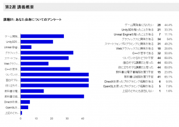

<!DOCTYPE html PUBLIC "-//W3C//DTD XHTML 1.0 Strict//EN" "https://www.w3.org/TR/xhtml1/DTD/xhtml1-strict.dtd" >
<html xmlns="https://www.w3.org/1999/xhtml" xml:lang="en" lang="ja" >
<head>
<!-- Global site tag (gtag.js) - Google Analytics -->
<script async src="https://www.googletagmanager.com/gtag/js?id=UA-15889025-2"></script>
<script>
  window.dataLayer = window.dataLayer || [];
  function gtag(){dataLayer.push(arguments);}
  gtag('js', new Date());

  gtag('config', 'UA-15889025-2');
</script>
<script data-ad-client="ca-pub-8010757944341847" async src="https://pagead2.googlesyndication.com/pagead/js/adsbygoogle.js"></script>
<meta http-equiv="content-type" content="text/html; charset=UTF-8" />


<meta name="viewport" content="width=device-width, initial-scale=1, maximum-scale=1" />

<title>ゲームプログラミング2015 &#8211; Shirai Lab</title>
<link rel='dns-prefetch' href='//fonts.googleapis.com/' />
<link rel="alternate" type="application/rss+xml" title="Shirai Lab &raquo; フィード" href="feed/index.html" />
<link rel="alternate" type="application/rss+xml" title="Shirai Lab &raquo; コメントフィード" href="comments/feed/index.html" />
<link rel="alternate" type="application/rss+xml" title="Shirai Lab &raquo; ゲームプログラミング2015 のコメントのフィード" href="lecture/gameprogramming/gp2015/feed/index.html" />
		<script type="text/javascript">
			window._wpemojiSettings = {"baseUrl":"https:\/\/s.w.org\/images\/core\/emoji\/11.2.0\/72x72\/","ext":".png","svgUrl":"https:\/\/s.w.org\/images\/core\/emoji\/11.2.0\/svg\/","svgExt":".svg","source":{"concatemoji":"https:\/\/blog.shirai.la\/wp-includes\/js\/wp-emoji-release.min.js?ver=5.1.6"}};
			!function(a,b,c){function d(a,b){var c=String.fromCharCode;l.clearRect(0,0,k.width,k.height),l.fillText(c.apply(this,a),0,0);var d=k.toDataURL();l.clearRect(0,0,k.width,k.height),l.fillText(c.apply(this,b),0,0);var e=k.toDataURL();return d===e}function e(a){var b;if(!l||!l.fillText)return!1;switch(l.textBaseline="top",l.font="600 32px Arial",a){case"flag":return!(b=d([55356,56826,55356,56819],[55356,56826,8203,55356,56819]))&&(b=d([55356,57332,56128,56423,56128,56418,56128,56421,56128,56430,56128,56423,56128,56447],[55356,57332,8203,56128,56423,8203,56128,56418,8203,56128,56421,8203,56128,56430,8203,56128,56423,8203,56128,56447]),!b);case"emoji":return b=d([55358,56760,9792,65039],[55358,56760,8203,9792,65039]),!b}return!1}function f(a){var c=b.createElement("script");c.src=a,c.defer=c.type="text/javascript",b.getElementsByTagName("head")[0].appendChild(c)}var g,h,i,j,k=b.createElement("canvas"),l=k.getContext&&k.getContext("2d");for(j=Array("flag","emoji"),c.supports={everything:!0,everythingExceptFlag:!0},i=0;i<j.length;i++)c.supports[j[i]]=e(j[i]),c.supports.everything=c.supports.everything&&c.supports[j[i]],"flag"!==j[i]&&(c.supports.everythingExceptFlag=c.supports.everythingExceptFlag&&c.supports[j[i]]);c.supports.everythingExceptFlag=c.supports.everythingExceptFlag&&!c.supports.flag,c.DOMReady=!1,c.readyCallback=function(){c.DOMReady=!0},c.supports.everything||(h=function(){c.readyCallback()},b.addEventListener?(b.addEventListener("DOMContentLoaded",h,!1),a.addEventListener("load",h,!1)):(a.attachEvent("onload",h),b.attachEvent("onreadystatechange",function(){"complete"===b.readyState&&c.readyCallback()})),g=c.source||{},g.concatemoji?f(g.concatemoji):g.wpemoji&&g.twemoji&&(f(g.twemoji),f(g.wpemoji)))}(window,document,window._wpemojiSettings);
		</script>
		<style type="text/css">
img.wp-smiley,
img.emoji {
	display: inline !important;
	border: none !important;
	box-shadow: none !important;
	height: 1em !important;
	width: 1em !important;
	margin: 0 .07em !important;
	vertical-align: -0.1em !important;
	background: none !important;
	padding: 0 !important;
}
</style>
	<link rel='stylesheet' id='jquery.bxslider-css'  href='wp-content/plugins/bxslider-integration/assets/css/bxslider-integration.min.css@ver=5.1.6.css' type='text/css' media='all' />
<link rel='stylesheet' id='wp-block-library-css'  href='wp-includes/css/dist/block-library/style.min.css@ver=5.1.6.css' type='text/css' media='all' />
<link rel='stylesheet' id='bp-member-block-css'  href='wp-content/plugins/buddypress/bp-members/css/blocks/member.min.css@ver=6.0.0.css' type='text/css' media='all' />
<link rel='stylesheet' id='bp-group-block-css'  href='wp-content/plugins/buddypress/bp-groups/css/blocks/group.min.css@ver=6.0.0.css' type='text/css' media='all' />
<link rel='stylesheet' id='bp-legacy-css-css'  href='wp-content/plugins/buddypress/bp-templates/bp-legacy/css/buddypress.min.css@ver=6.0.0.css' type='text/css' media='screen' />
<link rel='stylesheet' id='contact-form-7-css'  href='wp-content/plugins/contact-form-7/includes/css/styles.css@ver=5.1.9.css' type='text/css' media='all' />
<link rel='stylesheet' id='dlm-frontend-css'  href='wp-content/plugins/download-monitor/assets/css/frontend.css@ver=5.1.6.css' type='text/css' media='all' />
<link rel='stylesheet' id='gridster-style-css'  href='wp-content/themes/gridster-lite/style.css@ver=5.1.6.css' type='text/css' media='all' />
<link rel='stylesheet' id='open-sans-condensed-css'  href='https://fonts.googleapis.com/css?family=Open+Sans+Condensed%3A300&#038;ver=5.1.6' type='text/css' media='all' />
<link rel='stylesheet' id='amazonjs-css'  href='wp-content/plugins/amazonjs/css/amazonjs.css@ver=0.10.css' type='text/css' media='all' />
<script type='text/javascript' src='wp-includes/js/jquery/jquery.js@ver=1.12.4'></script>
<script type='text/javascript' src='wp-includes/js/jquery/jquery-migrate.min.js@ver=1.4.1'></script>
<script type='text/javascript' src='wp-content/plugins/bxslider-integration/assets/js/bxslider-integration.min.js@ver=5.1.6'></script>
<script type='text/javascript'>
/* <![CDATA[ */
var BP_Confirm = {"are_you_sure":"\u672c\u5f53\u306b\u5b9f\u884c\u3057\u307e\u3059\u304b ?"};
/* ]]> */
</script>
<script type='text/javascript' src='wp-content/plugins/buddypress/bp-core/js/confirm.min.js@ver=6.0.0'></script>
<script type='text/javascript' src='wp-content/plugins/buddypress/bp-core/js/widget-members.min.js@ver=6.0.0'></script>
<script type='text/javascript' src='wp-content/plugins/buddypress/bp-core/js/jquery-query.min.js@ver=6.0.0'></script>
<script type='text/javascript' src='wp-content/plugins/buddypress/bp-core/js/vendor/jquery-cookie.min.js@ver=6.0.0'></script>
<script type='text/javascript' src='wp-content/plugins/buddypress/bp-core/js/vendor/jquery-scroll-to.min.js@ver=6.0.0'></script>
<script type='text/javascript'>
/* <![CDATA[ */
var BP_DTheme = {"accepted":"\u627f\u8a8d\u6e08","close":"\u9589\u3058\u308b","comments":"\u30b3\u30e1\u30f3\u30c8","leave_group_confirm":"\u672c\u5f53\u306b\u3053\u306e\u30b0\u30eb\u30fc\u30d7\u304b\u3089\u96e2\u8131\u3057\u307e\u3059\u304b ?","mark_as_fav":"\u304a\u6c17\u306b\u5165\u308a","my_favs":"\u308f\u305f\u3057\u306e\u304a\u6c17\u306b\u5165\u308a","rejected":"\u62d2\u5426\u6e08\u307f","remove_fav":"\u304a\u6c17\u306b\u5165\u308a\u304b\u3089\u524a\u9664","show_all":"\u3059\u3079\u3066\u8868\u793a","show_all_comments":"\u3053\u306e\u30b9\u30ec\u30c3\u30c9\u306e\u3059\u3079\u3066\u306e\u30b3\u30e1\u30f3\u30c8\u3092\u898b\u308b","show_x_comments":"\u3059\u3079\u3066\u306e\u30b3\u30e1\u30f3\u30c8\u3092\u8868\u793a  (%d)","unsaved_changes":"\u30d7\u30ed\u30d5\u30a3\u30fc\u30eb\u306b\u4fdd\u5b58\u3055\u308c\u3066\u3044\u306a\u5909\u66f4\u304c\u3042\u308a\u307e\u3059\u3002\u3053\u306e\u30da\u30fc\u30b8\u304b\u3089\u79fb\u52d5\u3059\u308b\u3068\u3001\u5909\u66f4\u304c\u3059\u3079\u3066\u5931\u308f\u308c\u307e\u3059\u3002","view":"\u8868\u793a","store_filter_settings":""};
/* ]]> */
</script>
<script type='text/javascript' src='wp-content/plugins/buddypress/bp-templates/bp-legacy/js/buddypress.min.js@ver=6.0.0'></script>
<link rel='https://api.w.org/' href='https://blog.shirai.la/wp-json/' />
<link rel="EditURI" type="application/rsd+xml" title="RSD" href="xmlrpc.php@rsd" />
<link rel="wlwmanifest" type="application/wlwmanifest+xml" href="wp-includes/wlwmanifest.xml" /> 
<meta name="generator" content="WordPress 5.1.6" />
<link rel="canonical" href="index.html@p=3309.html" />
<link rel='shortlink' href='index.html@p=3309.html' />
<link rel="alternate" type="application/json+oembed" href="https://blog.shirai.la/wp-json/oembed/1.0/embed?url=http%3A%2F%2Fblog.shirai.la%2Flecture%2Fgameprogramming%2Fgp2015%2F" />
<link rel="alternate" type="text/xml+oembed" href="https://blog.shirai.la/wp-json/oembed/1.0/embed?url=http%3A%2F%2Fblog.shirai.la%2Flecture%2Fgameprogramming%2Fgp2015%2F&#038;format=xml" />

	<script type="text/javascript">var ajaxurl = 'https://blog.shirai.la/wp-admin/admin-ajax.php';</script>

<script type="text/javascript" src="https://blog.shirai.la/wp-content/plugins/si-captcha-for-wordpress/captcha/si_captcha.js?ver=1592149577"></script>
<!-- begin SI CAPTCHA Anti-Spam - login/register form style -->
<style type="text/css">
.si_captcha_small { width:175px; height:45px; padding-top:10px; padding-bottom:10px; }
.si_captcha_large { width:250px; height:60px; padding-top:10px; padding-bottom:10px; }
img#si_image_com { border-style:none; margin:0; padding-right:5px; float:left; }
img#si_image_reg { border-style:none; margin:0; padding-right:5px; float:left; }
img#si_image_log { border-style:none; margin:0; padding-right:5px; float:left; }
img#si_image_side_login { border-style:none; margin:0; padding-right:5px; float:left; }
img#si_image_checkout { border-style:none; margin:0; padding-right:5px; float:left; }
img#si_image_jetpack { border-style:none; margin:0; padding-right:5px; float:left; }
img#si_image_bbpress_topic { border-style:none; margin:0; padding-right:5px; float:left; }
.si_captcha_refresh { border-style:none; margin:0; vertical-align:bottom; }
div#si_captcha_input { display:block; padding-top:15px; padding-bottom:5px; }
label#si_captcha_code_label { margin:0; }
input#si_captcha_code_input { width:65px; }
p#si_captcha_code_p { clear: left; padding-top:10px; }
.si-captcha-jetpack-error { color:#DC3232; }
</style>
<!-- end SI CAPTCHA Anti-Spam - login/register form style -->
</head>

<body class="bp-legacy page-template-default page page-id-3309 page-child parent-pageid-2431 group-blog no-js">
<div id="container">
<div id="container">
<div id="sidebar">
<h1 id="blogtitle"><a href="index.html" title="Shirai Lab" rel="home">
Shirai Lab</a></h1>
<p class="tagline">
白井研究室</p>
<div class="sidebarwidget">
<div class="menu-menu-container"><ul id="menu-menu" class="menu"><li id="menu-item-3771" class="menu-item menu-item-type-custom menu-item-object-custom menu-item-home menu-item-3771"><a href="index.html" aria-current="page">ホーム</a></li>
<li><a href="https://www.shirai.la/www/index.html" aria-current="page">2012</a></li>
<li id="menu-item-3772" class="menu-item menu-item-type-post_type menu-item-object-page menu-item-3772"><a href="index.html@p=195.html">Home</a></li>
<li id="menu-item-3807" class="menu-item menu-item-type-post_type menu-item-object-page menu-item-3807"><a href="index.html@p=2433.html">Events</a></li>
<li id="menu-item-3775" class="menu-item menu-item-type-post_type menu-item-object-page menu-item-3775"><a href="index.html@p=2.html">Publications</a></li>
<li id="menu-item-3773" class="menu-item menu-item-type-post_type menu-item-object-page menu-item-has-children menu-item-3773"><a href="index.html@p=3253.html">Members</a>
<ul class="sub-menu">
	<li id="menu-item-3774" class="menu-item menu-item-type-post_type menu-item-object-page menu-item-3774"><a href="index.html@p=83.html">News</a></li>
</ul>
</li>
<li id="menu-item-3776" class="menu-item menu-item-type-post_type menu-item-object-page menu-item-3776"><a href="lavalvirtual.1.html">Laval Virtual</a></li>
<li id="menu-item-3777" class="menu-item menu-item-type-post_type menu-item-object-page current-page-ancestor menu-item-has-children menu-item-3777"><a href="index.html@p=2099.html">Lecture</a>
<ul class="sub-menu">
	<li id="menu-item-3778" class="menu-item menu-item-type-post_type menu-item-object-page menu-item-3778"><a href="index.html@p=2513.html">ComputerGames</a></li>
	<li id="menu-item-3779" class="menu-item menu-item-type-post_type menu-item-object-page menu-item-has-children menu-item-3779"><a href="index.html@p=2429.html">Unity</a>
	<ul class="sub-menu">
		<li id="menu-item-3780" class="menu-item menu-item-type-post_type menu-item-object-page menu-item-3780"><a href="index.html@p=2684.html">OpenCampus2013</a></li>
		<li id="menu-item-3781" class="menu-item menu-item-type-post_type menu-item-object-page menu-item-3781"><a href="index.html@p=2687.html">Unity3DでのExPixel対応コンテンツのつくりかた</a></li>
	</ul>
</li>
	<li id="menu-item-3782" class="menu-item menu-item-type-post_type menu-item-object-page menu-item-3782"><a href="index.html@p=2516.html">エンタテイメントシステム特論</a></li>
	<li id="menu-item-3783" class="menu-item menu-item-type-post_type menu-item-object-page current-page-ancestor menu-item-3783"><a href="index.html@p=2431.html">ゲームプログラミング</a></li>
	<li id="menu-item-3786" class="menu-item menu-item-type-post_type menu-item-object-page menu-item-has-children menu-item-3786"><a href="index.html@p=3393.html">メディアアート</a>
	<ul class="sub-menu">
		<li id="menu-item-3797" class="menu-item menu-item-type-post_type menu-item-object-page menu-item-3797"><a href="index.html@p=3672.html">講義「メディアアート」冬休み課題＆オンライン作品ギャラリー</a></li>
	</ul>
</li>
</ul>
</li>
<li id="menu-item-3800" class="menu-item menu-item-type-post_type menu-item-object-page menu-item-3800"><a href="index.html@p=1448.html">Bookshelf</a></li>
<li id="menu-item-3801" class="menu-item menu-item-type-post_type menu-item-object-page menu-item-has-children menu-item-3801"><a href="index.html@p=1729.html">Projects</a>
<ul class="sub-menu">
	<li id="menu-item-3802" class="menu-item menu-item-type-post_type menu-item-object-page menu-item-3802"><a href="index.html@p=204.html">2x3D</a></li>
	<li id="menu-item-3803" class="menu-item menu-item-type-post_type menu-item-object-page menu-item-3803"><a href="projects/expixel.1.html">ExPixel</a></li>
	<li id="menu-item-3805" class="menu-item menu-item-type-post_type menu-item-object-page menu-item-3805"><a href="index.html@p=2535.html">TEPIA</a></li>
	<li id="menu-item-3806" class="menu-item menu-item-type-post_type menu-item-object-page menu-item-3806"><a href="index.html@p=2187.html">スマ歩！さがみはら</a></li>
	<li id="menu-item-3804" class="menu-item menu-item-type-post_type menu-item-object-page menu-item-3804"><a href="index.html@p=202.html">Gallery</a></li>
	<li id="menu-item-3808" class="menu-item menu-item-type-post_type menu-item-object-page menu-item-3808"><a href="index.html@p=2428.html">アミューあつぎ「未来のゲームセンター」</a></li>
</ul>
</li>
<li id="menu-item-3809" class="menu-item menu-item-type-post_type menu-item-object-page menu-item-3809"><a href="index.html@p=2585.html">Access</a></li>
<li id="menu-item-3810" class="menu-item menu-item-type-post_type menu-item-object-page menu-item-3810"><a href="index.html@p=55.html">Contact</a></li>
<li id="menu-item-3811" class="menu-item menu-item-type-post_type menu-item-object-page menu-item-3811"><a href="index.html@p=40.html">Sitemap</a></li>
<li id="menu-item-3812" class="menu-item menu-item-type-post_type menu-item-object-page menu-item-3812"><a href="sitemap/sites.1.html">Sites</a></li>
<li id="menu-item-4372" class="menu-item menu-item-type-post_type menu-item-object-page menu-item-4372"><a href="index.html@p=4370.html">Shop</a></li>
<li id="menu-item-4650" class="menu-item menu-item-type-post_type menu-item-object-page menu-item-4650"><a href="https://blog.shirai.la/%e3%82%a2%e3%82%af%e3%82%bb%e3%82%b9%e3%81%aa%e3%81%97/">アクセスなし</a></li>
</ul></div></div>
	<form method="get" id="searchform" class="searchform" action="index.html" role="search">
		<label for="s" class="screen-reader-text">検索</label>
		<input type="search" class="searchfield" name="s" value="" id="s" placeholder="検索 &hellip;" />
		<input type="submit" class="submit" id="searchsubmit" value="検索" />
	</form>
<h3 class="sidetitle">
アーカイブ</h1>
<ul>
	<li><a href='blog/2018/07/index.html'>2018年7月</a></li>
	<li><a href='blog/2018/06/index.html'>2018年6月</a></li>
	<li><a href='blog/2018/02/index.html'>2018年2月</a></li>
	<li><a href='blog/2017/10/index.html'>2017年10月</a></li>
	<li><a href='blog/2017/09/index.html'>2017年9月</a></li>
	<li><a href='blog/2017/08/index.html'>2017年8月</a></li>
	<li><a href='blog/2017/07/index.html'>2017年7月</a></li>
	<li><a href='blog/2017/06/index.html'>2017年6月</a></li>
	<li><a href='blog/2017/04/index.html'>2017年4月</a></li>
	<li><a href='blog/2017/02/index.html'>2017年2月</a></li>
	<li><a href='blog/2017/01/index.html'>2017年1月</a></li>
	<li><a href='blog/2016/12/index.html'>2016年12月</a></li>
	<li><a href='blog/2016/11/index.html'>2016年11月</a></li>
	<li><a href='blog/2016/10/index.html'>2016年10月</a></li>
	<li><a href='blog/2016/09/index.html'>2016年9月</a></li>
	<li><a href='blog/2016/08/index.html'>2016年8月</a></li>
	<li><a href='blog/2016/07/index.html'>2016年7月</a></li>
	<li><a href='blog/2016/06/index.html'>2016年6月</a></li>
	<li><a href='blog/2016/04/index.html'>2016年4月</a></li>
	<li><a href='blog/2016/02/index.html'>2016年2月</a></li>
	<li><a href='blog/2015/12/index.html'>2015年12月</a></li>
	<li><a href='blog/2015/11/index.html'>2015年11月</a></li>
	<li><a href='blog/2015/10/index.html'>2015年10月</a></li>
	<li><a href='blog/2015/09/index.html'>2015年9月</a></li>
	<li><a href='blog/2015/08/index.html'>2015年8月</a></li>
	<li><a href='blog/2015/07/index.html'>2015年7月</a></li>
	<li><a href='blog/2015/06/index.html'>2015年6月</a></li>
	<li><a href='blog/2015/05/index.html'>2015年5月</a></li>
	<li><a href='blog/2015/04/index.html'>2015年4月</a></li>
	<li><a href='blog/2015/03/index.html'>2015年3月</a></li>
	<li><a href='blog/2015/02/index.html'>2015年2月</a></li>
	<li><a href='blog/2014/12/index.html'>2014年12月</a></li>
	<li><a href='blog/2014/11/index.html'>2014年11月</a></li>
	<li><a href='blog/2014/10/index.html'>2014年10月</a></li>
	<li><a href='blog/2014/09/index.html'>2014年9月</a></li>
	<li><a href='blog/2014/08/index.html'>2014年8月</a></li>
	<li><a href='blog/2014/07/index.html'>2014年7月</a></li>
	<li><a href='blog/2014/06/index.html'>2014年6月</a></li>
	<li><a href='blog/2014/05/index.html'>2014年5月</a></li>
	<li><a href='blog/2014/04/index.html'>2014年4月</a></li>
	<li><a href='blog/2014/03/index.html'>2014年3月</a></li>
	<li><a href='blog/2014/02/index.html'>2014年2月</a></li>
	<li><a href='blog/2014/01/index.html'>2014年1月</a></li>
	<li><a href='blog/2013/12/index.html'>2013年12月</a></li>
	<li><a href='blog/2013/11/index.html'>2013年11月</a></li>
	<li><a href='blog/2013/10/index.html'>2013年10月</a></li>
	<li><a href='blog/2013/09/index.html'>2013年9月</a></li>
	<li><a href='blog/2013/08/index.html'>2013年8月</a></li>
	<li><a href='blog/2013/07/index.html'>2013年7月</a></li>
	<li><a href='blog/2013/06/index.html'>2013年6月</a></li>
	<li><a href='blog/2013/05/index.html'>2013年5月</a></li>
	<li><a href='blog/2013/04/index.html'>2013年4月</a></li>
	<li><a href='blog/2013/03/index.html'>2013年3月</a></li>
	<li><a href='blog/2013/02/index.html'>2013年2月</a></li>
	<li><a href='blog/2013/01/index.html'>2013年1月</a></li>
	<li><a href='blog/2012/12/index.html'>2012年12月</a></li>
	<li><a href='blog/2012/11/index.html'>2012年11月</a></li>
	<li><a href='blog/2012/10/index.html'>2012年10月</a></li>
	<li><a href='blog/2012/09/index.html'>2012年9月</a></li>
	<li><a href='blog/2012/08/index.html'>2012年8月</a></li>
	<li><a href='blog/2012/07/index.html'>2012年7月</a></li>
	<li><a href='blog/2012/06/index.html'>2012年6月</a></li>
	<li><a href='blog/2012/03/index.html'>2012年3月</a></li>
	<li><a href='blog/2012/02/index.html'>2012年2月</a></li>
	<li><a href='blog/2011/12/index.html'>2011年12月</a></li>
	<li><a href='blog/2011/11/index.html'>2011年11月</a></li>
	<li><a href='blog/2011/10/index.html'>2011年10月</a></li>
	<li><a href='blog/2011/09/index.html'>2011年9月</a></li>
	<li><a href='blog/2011/08/index.html'>2011年8月</a></li>
	<li><a href='blog/2011/07/index.html'>2011年7月</a></li>
	<li><a href='blog/2011/06/index.html'>2011年6月</a></li>
	<li><a href='blog/2011/05/index.html'>2011年5月</a></li>
	<li><a href='blog/2011/03/index.html'>2011年3月</a></li>
	<li><a href='blog/2011/02/index.html'>2011年2月</a></li>
	<li><a href='blog/2011/01/index.html'>2011年1月</a></li>
	<li><a href='blog/2010/12/index.html'>2010年12月</a></li>
	<li><a href='blog/2010/11/index.html'>2010年11月</a></li>
	<li><a href='blog/2010/10/index.html'>2010年10月</a></li>
	<li><a href='blog/2010/09/index.html'>2010年9月</a></li>
	<li><a href='blog/2010/08/index.html'>2010年8月</a></li>
	<li><a href='blog/2010/07/index.html'>2010年7月</a></li>
	<li><a href='blog/2010/06/index.html'>2010年6月</a></li>
	<li><a href='blog/2010/05/index.html'>2010年5月</a></li>
	<li><a href='blog/2010/04/index.html'>2010年4月</a></li>
</ul>
<h3 class="sidetitle">
メタ情報</h1>
</div>
<!-- End Sidebar -->

<div id="main">
<div id="post-3309" class="post-3309 page type-page status-publish hentry"> <a href="index.html@p=3309.html">
</a>
<div id="content">
<div id="postheading">
<h1>
ゲームプログラミング2015</h1>
</div>
<p>本ページは講義「ゲームプログラミング」2015年度の講義を抜粋して共有するものです。</p>
<p>講義の全編はYouTube動画にありますが公開設定していません。</p>
<p>将来の受講生は履修の検討材料にしてください。</p>
<hr />
<p>【連絡】 (5/4掲示)　<a href="https://www.facebook.com/events/461973750635902/" target="_blank">7月9日（木）2限　K1-303 に補講があります</a>。</p>
<p>【講義名】ゲームプログラミング Game Programming</p>
<p>前期　月曜日2限 3年 専門教育科目 ゲームコース 選択 2単位 担当：白井暁彦　准教授　教室：303</p>
<p>【講義用Facebookグループ】</p>
<p><a href="https://www.facebook.com/groups/KAIT.GamePro/" class="autohyperlink" target="_blank">https://www.facebook.com/groups/KAIT.GamePro/</a></p>
<p><a href="https://j.mp/KAIT2015GP" class="autohyperlink" target="_blank">https://j.mp/KAIT2015GP</a></p>
<p>&nbsp;</p>
<p>【学修目標・学修内容】<br />
ゲームプログラミング技術は他のプログラミングと何が異なり，どのような設計手法，アルゴリズム，実装，データ構造，デバッグ，最適化手法，ユーザ行動分析がとられる必要があるのであろうか．実際の開発事例を分析しながら，初学者から専門技術者までの中間的技能を学ぶ．<br />
進行により，cocos2dを使ったより実践的なモバイルプラットフォームにおけるゲーム開発，C++11，JavaScriptによる開発についても学ぶ．</p>
<p>学修成果：<br />
ゲーム開発に長年関わるエンジニアとして必要となる技術，特にグラフィックス，ネットワーク，就職試験に出題されるアルゴリズムについて，専門基盤的な実力を身につけることができる．<br />
Unity等のゲームエンジンを使用する上で内部の動作を理解することができる．</p>
<p>教科書：「入門ゲームプログラミング」 チャールズ・ケリー著／ソフトバンク・クリエイティブ <div data-role="amazonjs" data-asin="4797374543" data-locale="JP" data-tmpl="" data-img-size="" class="asin_4797374543_JP_ amazonjs_item"><div class="amazonjs_indicator"><span class="amazonjs_indicator_img"></span><a class="amazonjs_indicator_title" href="index.html@p=3309.html#">入門ゲームプログラミング (Professional Game Developerシリーズ)</a><span class="amazonjs_indicator_footer"></span></div></div></p>
<p>【履修条件等】<br />
履修条件：応用プログラミングA(C++)<br />
履修推奨：ゲームグラフィックス，コンピュータアーキテクチャ</p>
<p>【授業形式、形態：講義および演習】<br />
試験40％（第15講にて授業内試験として実施），レポート30％（毎回のWebフォーム），成果30％（自主提出課題）とする．<br />
課題提出は毎回の講義において事後学習の成果を入力するWebフォーム設定する．<br />
自主提出課題はゲーム開発プロジェクトおよび制作記録の提出であり，提出は必須としないが，成績への付加および他課題未提出時の加点となるため，提出を推奨する．</p>
<p>【講義計画】</p>
<p>4/13　講義概要１・受講者アンケート <a title="https://j.mp/KAIT2015GP" href="https://j.mp/KAIT2015GP">https://j.mp/KAIT2015GP</a><br />
4/20　講義概要２／Windowsプログラミングの基礎<br />
4/27　DirectXの概要<br />
5/11　ゲームエンジン<br />
5/18　スプライトとアニメーション<br />
5/25　衝突とエンティティ１<br />
6/1　衝突とエンティティ２<br />
6/8　サウンドとネットワークプログラミング<br />
6/15　テストとプロジェクト管理／中間まとめ<br />
6/22　スマートフォンプラットフォーム１<br />
6/29　スマートフォンプラットフォーム２<br />
7/6　スマートフォンプラットフォーム３<br />
7/13　ブラウザアプリケーション１<br />
7/20　ブラウザアプリケーション２<br />
7/27　授業内試験・まとめ<br />
※上記スケジュールは2015年度の予定です．受講者の理解進行によって変更の可能性があります．</p>
<p>6/29 以降を「ゲームプログラミング応用編」として、基礎から応用の中間の実装編に変更しています。</p>
<p>第11講：ゲームプログラミング応用編スライドから<br />
<iframe src="https://www.slideshare.net/slideshow/embed_code/key/EVUaWR6wjb81Co" width="427" height="356" frameborder="0" marginwidth="0" marginheight="0" scrolling="no" style="border:1px solid #CCC; border-width:1px; margin-bottom:5px; max-width: 100%;" allowfullscreen> </iframe> </p>
<div style="margin-bottom:5px"> <strong> <a href="https://www.slideshare.net/aquihiko/2015-1-49942140" title="ゲームプログラミング - 応用編 1 - 20150629" target="_blank">ゲームプログラミング &#8211; 応用編 1 &#8211; 20150629</a> </strong> from <strong><a href="https://www.slideshare.net/aquihiko" target="_blank">Kanagawa Institute of Technology</a></strong> </div>
<hr />
<p>【講義進行】</p>
<p>4/13　休講<br />
4/20　講義概要<br />
4/27　Windowsプログラミングの基礎／DirectXの概要<br />
5/11　ゲームエンジン<br />
5/18　スプライトとアニメーション1<br />
5/25　スプライトとアニメーション2<br />
6/1　衝突とエンティティ1,2<br />
6/8　サウンド<br />
6/15　テストとプロジェクト管理／ネットワークプログラミング1<br />
6/22　ネットワークプログラミング2／中間まとめ<br />
6/29　応用編1<br />
7/6　応用編2<br />
7/13　任天堂研究／ポートフォリオ作成<br />
7/20　ゲームエンジンを自力で学ぶ<br />
7/27　授業内試験・まとめ</p>
<p>★モバイル編は授業の理解度を優先するため割愛し、代わりに応用編2回と任天堂研究、ポートフォリオ、Unityを使ったゲームエンジンを追加しています。モバイルはUnityでトライしてみるとよいと思います。</p>
<p>■ H27ゲームプログラミング事後学習</p>
<p>〔講義後入力フォーム〕 <a href="https://j.mp/KAIT2015GP" class="autohyperlink" target="_blank">https://j.mp/KAIT2015GP</a></p>
<p>&nbsp;</p>
<hr />
<p><a href="wp-content/uploads/2015/07/w2.png"></a></p>
<p>&nbsp;</p>
<p>&nbsp;</p>
<h3 class="ss-indiv-chart-title">課題01: あなた自身についてのアンケート</h3>
<div id=":5.sc" class="ss-summary-container">
<div id=":5.rt" class="ss-response-value-table">
<table class="ss-response-summary-table">
<tbody>
<tr>
<td class="ss-table-label">ゲーム開発者になりたい</td>
<td class="ss-table-number">28</td>
<td class="ss-table-percentage">44.4%</td>
</tr>
<tr>
<td class="ss-table-label">Unity3Dを触ったことがある</td>
<td class="ss-table-number">21</td>
<td class="ss-table-percentage">33.3%</td>
</tr>
<tr>
<td class="ss-table-label">Unreal Engineを触ったことがある</td>
<td class="ss-table-number">7</td>
<td class="ss-table-percentage">11.1%</td>
</tr>
<tr>
<td class="ss-table-label">グラフィックスに興味がある</td>
<td class="ss-table-number">34</td>
<td class="ss-table-percentage">54%</td>
</tr>
<tr>
<td class="ss-table-label">スマートフォンプログラミングに興味がある</td>
<td class="ss-table-number">31</td>
<td class="ss-table-percentage">49.2%</td>
</tr>
<tr>
<td class="ss-table-label">Webグラフィックスに興味がある</td>
<td class="ss-table-number">18</td>
<td class="ss-table-percentage">28.6%</td>
</tr>
<tr>
<td class="ss-table-label">C++が苦手である</td>
<td class="ss-table-number">32</td>
<td class="ss-table-percentage">50.8%</td>
</tr>
<tr>
<td class="ss-table-label">ついていけるかどうか不安</td>
<td class="ss-table-number">44</td>
<td class="ss-table-percentage">69.8%</td>
</tr>
<tr>
<td class="ss-table-label">面白そうな講義だと思った</td>
<td class="ss-table-number">44</td>
<td class="ss-table-percentage">69.8%</td>
</tr>
<tr>
<td class="ss-table-label">役に立ちそうな講義だと思った</td>
<td class="ss-table-number">44</td>
<td class="ss-table-percentage">69.8%</td>
</tr>
<tr>
<td class="ss-table-label">教科書は電子書籍版を買う予定</td>
<td class="ss-table-number">15</td>
<td class="ss-table-percentage">23.8%</td>
</tr>
<tr>
<td class="ss-table-label">教科書は紙版を買う予定</td>
<td class="ss-table-number">41</td>
<td class="ss-table-percentage">65.1%</td>
</tr>
<tr>
<td class="ss-table-label">DirectXを使ったプログラミング経験がある</td>
<td class="ss-table-number">6</td>
<td class="ss-table-percentage">9.5%</td>
</tr>
<tr>
<td class="ss-table-label">OpenGLを使ったプログラミング経験がある</td>
<td class="ss-table-number">5</td>
<td class="ss-table-percentage">7.9%</td>
</tr>
<tr>
<td class="ss-table-label">上記のどれにも該当しない</td>
<td class="ss-table-number">1</td>
<td class="ss-table-percentage">1.6%</td>
</tr>
</tbody>
</table>
</div>
<h3 class="ss-indiv-chart-title">課題02：堂前嘉樹氏へのメッセージ</h3>
<p>堂前先生には、ゲークリ特訓の２月末の最終発表後の懇親会で、 ブラウン元彼氏のＡＩをＡＩと呼ぶのは卑怯だと言われてしまったので、 この講義と、書籍と、自習で、しっかりとしたＡＩを組めるようになっていきたい。</p>
<p>プログラミングは苦手だが理解できるよう努力したい</p>
<p>私も、ゲームを作るにあたってゲームエンジンを使えば比較的簡単にゲームを作れと思います。そして、そのゲームエンジンを使うにもCプログラムの知識やDirectXの知識もあるほうがすばらしいゲームを作れるのではないかと思いましたす。</p>
<p>自分は自宅ではあまりプログラムを書くことが無かったので、あいた時間になるべくプログラムを描いてみようと思った。</p>
<p>ゲームプログラマーが育ちにくい時代と書いてあるが、確かに今の時代、色々な物が進化をしている。ゲームも２Ｄから３Ｄにどんどん変わっていき、それを勉強するにも大変だと感じる。 　だがどんなに進化を遂げても、基礎を身に着けているかいないかでやはり変わるものなのだなとも感じた。</p>
<p>あらゆる物事について、技術が発展すればするほど、ある意味であらゆる機会が喪失されていると思うことがあります。プログラミング言語とゲームエンジンによる開発について述べておられるように、簡単に利用できる高品質なツールや製品を使うことで、最低ラインを押し上げることは出来ますが、利用者本人の成長に乏しい。 このことを初めて思ったのは、記憶している限りでは小学生の時に「ホームページビルダーを使って簡単なwebページを作ってみよう」という授業を受けた時のことでした。ネット上での発信手段としてまだ、個人サイトがメジャーな時代でしたので、当時の私は、拙いながらHTMLのテンプレート配布サイトからソースをコピーし、その上をいじくりまわしていました。授業での取り組みは、その場でそれらしいモノを作って喜ぶことは出来ましたが、幼いながらに「でも、このソフトじゃないと使えないじゃん。これ。」と思っていました。 ゲームエンジンに関しても、応用的に他のエンジンの操作ができることはあるかもしれませんが、基本的には、全く同じように別のエンジン上でも操作できるということはないだろうと思います。色んな状況で仕事し得る環境にあって低レイヤは重要であることを、再認識させてくださってありがとうございました。</p>
<p>どんなものでも、技術が発達すれば敷居が高くなると言う事を考えさせられました。</p>
<p>私はプログラムがもともと苦手ですが、技術的なハードルが少し前よりも上がったという考えは賛同できます。少しずつ技術が進化している中、自分もそれに少しでもついていけるようになりたいと思いました。</p>
<p>プログラマになるために基礎力が必要であることや、努力が必要であることがとてもよく分かりました。プログラムで一から物を作ることはとても楽しいことだと思っているので、この教科書で基礎力を身につけ今後に生かしたいと思います。</p>
<p>ゲームを作るうえで，ゲームエンジンとプログラミングのどっちがいいかと決めることは一概に出来ないと考える．自分たちみたいに授業で習っていた人たち以外の人がゲームを一から作りたいと考えたとき，ゲームエンジンを使って作ったほうが見た目も派手なので入門としていいと考えられ，作れるようになったらプログラミングでもやっていく流れで作るといいと考える．自分たちのような授業でどっちも習えるのはとてもいい環境だと考えられるので，頑張って習得したい．</p>
<p>ゲーム変化やゲーム制作の変化がとてもわかり易く興味深かったです。</p>
<p>基本は大事であるという言葉が刊行に寄せてをよんでどれほど大事か感じることができました。</p>
<p>企業にもよるが、ゲーム会社のプログラム募集に関してはゲームエンジンを使ってゲームを作ったという人よりも、プログラミング言語でゲームを作ったという人を取りたがるということだろうか？本当にゲーム制作に打ち込める人ならば２Dだろうが３Dだろうが独学で取得するろうと思う。実際、天才プログラマや天才ハッカーは、コンピュータにのめりこみ独学で技術を得たという事例の方が多い。</p>
<p>刊行に寄せてのメッセージを読んで、深く関心をいたしました。 確かにゲームエンジンを用いることで、派手に見せることなどは可能だがその中の仕組みを知らなければ応用の範囲を知ることはできない。 ゲームでできることも年々増えていくが、ゲームを作る側に要求されるものも多くなるという話は、ゲームプログラミングを学んでいる者として考えていかなければならないことであると思いました。</p>
<p>ゲームプログラミングの世界に飛び込むのが難しいという意見にはすごく共感できる。</p>
<p>ゲーム作りだけでなくありとあらゆる技術には土台となる基礎力が重要だと私は思っている。 これまで授業でプログラミングに触れてきたが回数を重ねていくにつれて理解と応用ができるようになり、積み重ねが大事なんだとあらためて実感した。堂前嘉樹氏が書いてくださったように地力を固めるように進んで学んでいきたいと思う。</p>
<p>何事でも基礎と努力は必要で、それを学んだり続けられるモチベーションを持つ事が第一だと思った。 ゲーム開発環境のハードルが上がっているのが具体的に納得できた。</p>
<p>ゲームプログラマの現状でモチベーションの話がでたが、ゲーム制作の仕事を視野に入れる場合多、くの知識を身につけることで自分のモチベーションを上げることができると感じた。</p>
<p>教科書として使われる『入門ゲームプログラミング』 &#8220;刊行に寄せて &#8211; 堂前嘉樹&#8221; を読んでいて、以前から私自身が考えていたことと、この本で堂前氏が語ろうとしていることが一致していると、まず初めに感じました。 確かに数十年前に比べると、プロジェクト（ゲーム・ソフトなど）の規模が大きくなりつつあるため、プログラマとしての望ましいスキルが徐々に高くなっているのは事実だと思います。 最近ではゲームエンジンという言葉がよくつかわれるようになっていますが、これは、プログラマの仕事を単純化させるためのフレームワーク（開発環境）であり、堂前氏が述べている通り、そのおかげで、近年ではゲームなどが簡単に作れるようになっています。 しかしながら、エンジンの仕組みを理解していない人々がゲームを簡単に作れるようになって、残念ながら、そう言った人が増えつつあるのが現状ですが、やはり、基礎を充分に理解してから、より高水準言語を学んでいくのがベストだと私には思えます。 そのため、画面にオブジェクトを置きながらソフトウエアを開発するのは、トップ水準のプログラマが、基礎を理解した前提ですべきことだと思います。あくまでもプログラマはＣＧアティストではありません、当然と言えば当然ですが、スクリプトを書く者であり、ビジュアルとは一切かかわらない者だと私も考えています。</p>
<p>習うより慣れろという言葉に従い自分の作品をひとつでも作り上げたいと感じました</p>
<p>今、多くのゲームを見てみると、3Dのものが溢れていて、綺麗なグラフィックばかりが目に映る。これを作るのに途方もない努力が必要だとばかり考えてしまって、基礎を疎かにしてしまったり、学ぶことに不安感が溜まってしまっていた。堂前さんの文は、基礎がどれだけ大切かを気づかせてくれるものだった。過酷なものには変わりないが、今学んでいることが力になると再認識できる内容だった。</p>
<p>頑張って学んでいこうと思いました。</p>
<p>私は基礎の部分が大切だということを強く感じている。実際プログラム以外にも、数学での公式でも理解していなければ応用問題も解けない。プログラムも、内部ではどのように処理を行っているかをある程度理解していなければ使いこなすことは難しいであろう。 私はゲーム音楽に興味があり、ゲーム会社の採用情報を時々確認している。そのとき、某ゲーム会社が、プログラマの大まかな採用基準を載せているページがあった。そこには「C++が理解でき、使えること」と書かれていた。ゲームエンジンが存在していても、C++のような基礎となるプログラム言語が理解できることが、プロとして求められているのだと堂前氏の著書を読み、強く感じた。</p>
<p>ゲームプログラマが育ちにくい理由については完全に同意したい。実際僕もPS3、PS4並みに美麗なゲームに関われるかと聞かれたらしり込みするだろう事は想像に難しくない。 しかしだからこそそういうハードルを乗り越えた能力の高いプログラマが出来るのではないかと思います。</p>
<p>自分では考えたことがない、また自分が目指す道に関する考えであったのでとても興味がわき、この授業を受けてみようという意欲がさらにわいた</p>
<p>とにかくプログラムをやるにしても基礎が重要と言うことが良くわかった。 確かにプログラミングを地道に習うよりもゲームエンジンを使ったほうが見た目も派手で、実際に動かせることからそっちのほうが楽しい。しかしながらここまで基礎が重要と念入りに先達に言われるとよほど必要なことなんだなと実感できた。 この本を読むと2Dゲームを造ることが出来るレベルまで達するとのことなのでぜひともそのレベルまで到達したい。</p>
<p>私は高校時代に部活動の中でゲームを作るという活動をしました。基礎を学ぶこと無く開発に取り組んだためデバッグが出来ずに時間がなくなってしまう経験があります。今でもデバッグは苦手意識があります。 基礎力の話が文中に登場した時に、私はその高校時代を思い出しました。Unityに初めて触れた時も、仕組みがわからずどう使えば良いのか困惑するだけでした。 仕組みや考え方等、理解する力を獲得していければと思います。</p>
<p>本書に対する姿勢というのをわかりやすく教えていただきました。 また、これからの技術者としてどうあってほしいかなど、私たち学生などにわかりやすく伝えていただきました。ゲームエンジンをただ使うのではなく、その中でどのように動くのか、仕組みを学ぶのが大切だと思いました。</p>
<p>自分はＣ言語が苦手であり、それほどまでに理解があるとはとてもいい難いですが、序盤やサンプルソースコードを見るに、丁寧に書かれているなと思いました。 まずＣ言語を使ってプログラムを作ろう、と考えてもそれ以前にどうやって入力画面にいくのか？　といったような初心者が陥ってしまうようなつまずきだとかもＰＣ画面をちゃんと写して無いようにしているのもグッドな部分だと思います。</p>
<p>ゲームプログラミングをするとなると、C++を何年ぐらい勉強すれば市販されているようなゲームが作れるようになるのかなと思った</p>
<p>PS3なのゲームをやっていて、これをプログラミングできるようにするにはどのように勉強すればいいのかと悩んでいましたが、この記事を読んで、いきなり難しいものを作るのではなく、作れそうなものからコツコツ作り、モチベーションとともに技術もあげていこうと思いました。</p>
<p>実際にゲームエンジンを使ったゲーム製作をしたのはあまり無いが、ゲームエンジンを使えば開発にかかる労力は格段に減ると感じた。 自分は今年海外情報メディア研修に参加してみて、自分と同じ年代の学生がゲームエンジンを作成していると言う事実を知りとても驚いた。 自分もこの学習を通じて、実践的なプログラミング能力を身につけたいと思った。</p>
<p>自分が求めているようなゲームのプログラミングに関して、図解とともに説明してあり、とてもわかりやすいです。</p>
<p>昔と今の違いについて少し知ることができ、度量が大事ということもわかった。</p>
<p>基礎力がとても大切ということなのでこの教科書を使い基礎力を身につけたいと思います</p>
<p>ITの進化が皮肉にも、ITを進化・成長させる人材を少なくさせてしまっているジレンマに納得した。 自分はまだITについてそれほどの知識はないが、蓄えた知識が後に灰化し、 また知識をつけなければこの業界はやっていけないというのは、おもしろながらも他とは違い、常に確信技術を求め続ける意思をもたなければいけない。</p>
<p>ひとまずゲームとして遊べるような完成品を作ってみたいと思った。</p>
<p>刊行に寄せてを読み、「この規模のものに自分が関われる技術を持ち得るだろうか」などから来る不安などは理解できるものであるし、実際にそう思う。ただ、ハードルが高いと思ってしまうと引っ込み思案になってしまうかもしれないので、少しでも自分のモノに出来るよう我武者羅に頑張り、最後まで付いて行きたいと思う。</p>
<p>実に緻密な文章で書かれていると思いました。</p>
<p>ゲームエンジンというものが現代のゲーム作りにおいて非常に重要なものであるということがわかった．ゲームエンジンというものについての理解を深めておきたい．</p>
<p>技術や気持ちからくるモチベーションやゲームエンジンを使うことによってモチベーションが上がりやすいといった点でとても感化されました。</p>
<p>勉強しなければいけないことが増えた、まさしくその通りだと思う。まだまだ未完成なものであるが、その進化はすさまじく、グラフィックの進化は10年くらいでとてつもなく進化した。私が楽しんだあのころ（nintendo64くらい）のゲームというものは、まだまだ私が成長しない間にいつの間にかその形はない。あのころ作ってみたかったゲームはいまではなくなってしまっている。大学でプログラミングというのを少しかじっただけの私だが、今からがんばったらゲームボーイくらいのレベルなら作れるかも、と思えるが、PS３、Wii、そしてPS4レベルのものはとても作れる気がしない。分業化、と言うが自分で作った、と思えるのかどうかが私としては重要である。いつの間にかゲームを作りたいと言う思いは消えていってしまった。少し悲しい気持ちである。</p>
<p>今まではDXライブラリを使用したゲーム製作しか行ったことがないのでこの機会にこの本でDirectXの使い方を覚えていきたい</p>
<p>ゲーム開発の規模が、昔はそれほど大きくなかったことを知り、驚いた。現在では一から作るということはやはり難しいことなのだろうと思う。自分は将来をゲーム作りで生活することを視野に入れていないが、このような本を一冊学び、何かを作ることは自分の将来に役立つものがあると考えて受講を選んだ。</p>
<p>読んでみて実際に2Dから勉強を始めた自分としては3Dのハードルが高いと感じた事に共感を持てた。</p>
<p>ユーザーとしてゲームをプレイすることは好きだが実際に自分でゲーム開発を行ったことはなく、正直どうやってつくるのかもよくわかっていない。しかし、堂前嘉樹氏の記事を読んでゲーム開発の技術者への興味を持つことができた。プログラミングは好きなのでこの講義や「入門ゲームプログラミング」を通して興味を深めていきたいと思えた。</p>
<p>様々な経験をしてきた現役のゲームプログラマとしての見方として考え深いものを感じた。若いプログラマ志望の気持ちの考え方も、私にとっては深く当てはまるものがあり、このような考えを持ち合わせている方の薦める教科書に期待したいと感じた。</p>
<p>確かに、現在のゲームプログラミングには、一昔前よりも多くの知識を必要としていると思います。しかし、一昔前には、ゲームプログラミングを教わる授業などはなかったと聞いています。つまり、学ぶ環境は、この授業を例として整ってきているのです。なので、一概にプログラマが育ちづらいと思うのは、少し悲観しているのではないかと思いました。</p>
<p>自分はプログラミングに苦手意識を持っているが、だからこそ基礎部分をしっかりと習得したいと思っている。 　そのためにも、この本に載っていることを習得できるように努力したい。</p>
<p>『入門ゲームプログラミング』&#8221;刊行に寄せて-堂前嘉樹&#8221;を読んで、自分にも多くの点、例えば「ファミコンのゲームとPS3のゲームを見て、前者は楽しそう、これなら作れるかも、と見て思い、後者はグラフィックが素晴らしく没入感がある、ただこの規模のものに自分が関われる技術を持ち得るだろうか、と感じる」という点や「ゲームエンジンを用いる事で簡単にゲームが作れる上に見た目も派手なので、モチベーションが上がりやすいのは明らか」という文章は特に当てはまってしまっていると感じました。 確かに、これからのゲームを創っていくプログラマが「ゲームエンジンでしかゲームが作れません」という時代になってしまう事はあってはならないと思います。 そのためにこの本を理解し、自身の知識として吸収して0からでも自分でゲームを創れるようになるべきだと考えました。より多くのプログラムを書き、他の人にソースを見てもらったり、実際に作ったゲームをプレイして感想をもらうことも重要だと思いました。</p>
<p>実際にUnityを使ったことがありますが、書籍やインターネットからプログラムを参考にしてプログラムを作る事ができていた。Unityのようなゲームエンジンが、Unityがどのように動いているのか、また、ハードに近い部分のものなどの知識があれば、より良いものをつくることができ、動かないときの原因が理解しやすいと思いました。 DirectXやC++のことをもう少し勉強して、少しは理解できればと思う。</p>
<p>ゲームプログラミングをするための技術がどんどん難しくなり、増えていく事に着いていくことができるか不安になりました。</p>
<p>自分もそうですが、プログラミングに対して苦手意識を持っているところがあると思います。理由としては幾つか理由がありますが、その中でも一番なのが、完成するまでそれがどのように動くか、また正しいのかが一目でわからないということにあると思います。ゲームエンジンなんかではすぐに成果が目に見えるという利点があり、最近の若い子（自分も含め）はすぐに目に見える成果を楽しむと同時に安心感を求めているのではないかと思います。自分は趣味が絵を描くことなんですがコードを書くことと絵を描くことは少し似ていると思います。理由としては「かかないと」上手くなれない。完成しないとそれがどんなものなのかはっきりわからないというところが似ていると感じました。また、現状の業界ではどちらも労働に見合った報酬がしっかり支払われてないと言われているところも似ています。前者の方は個人の問題ですが、後者の方は社会全体で見直していかないといけないと私は考えます。見合った報酬が支払われなければ技術のグレードアップも望めませんし、若い人も尚更この世界に飛び込んできにくくなるのではないかと思います。自分は苦手意識を持ちながらも挑戦するタイプの人間になりたいと思っていますが、実際はそんな人の方が圧倒的に少ないので人は減っていくものなんだと思いました。</p>
<p>このメッセージを通して、私はプログラミングが本当に苦手であるが、少しずつの積み重ねる努力を通していけば、自分自身への力になっていくのではないかと思った。今後プログラミングは苦手ではあるが、挑戦しようと考えた。</p>
<p>ゲームエンジンなど中身の仕組みを理解していなければ、万が一のトラブルに対応できなくなるだろう。基礎が重要であることを改めて認識した。</p>
<p>確かに2Dと比べるとゲームプログラマーの敷居は高くなっているかもしれない。実際自分も3Dゲームより2D格闘ゲームとかを作ってみたいと今では考えている。しかし、素晴らしいゲームに出合える事はゲームクリエイターになりたいと思う一歩ではないかと私は思う。確かに昔はゲームの存在自体が目新しく全てが素晴らしく見えたかもしれない、文字列とドットだけで人を感動させていたのだから。その表現がリアルになったことで私達の眼は肥えてしまったのかもしれない。でもそれをはじめてみたときは凄いと思い創ってみたいと思えるのがゲームクリエイターなのではないだろうか？</p>
<p>堂前さんの文章を読み進めると、僕と同じ意見だったのでとてもびっくりしました、と同時にとても納得しました。なぜなら、僕も２Dのプログラムなら分かるけど、３Dを始めて触ったときはなんじゃこりゃと思い、難しく感じたからです。 現在もゲームプログラマとして働く堂前さんに、アドバイスをもらえてとても心強いです。このアドバイスを大事にして頑張りたいと思います。</p>
</div>
<div class="ss-form-question errorbox-good">
<div class="ss-item ss-item-required ss-checkbox" dir="auto">
<div class="ss-form-entry">
<div class="errorbox-good">
<div class="ss-item  ss-page-break" dir="auto">
<div class="ss-form-entry">
<h2 class="ss-page-title">#03 Windowsプログラミング</h2>
</div>
</div>
</div>
<div class="errorbox-good">
<div class="ss-item  ss-section-header" dir="auto">
<div class="ss-form-entry">
<h2 class="ss-section-title">講義のポイント</h2>
<div class="ss-section-description ss-no-ignore-whitespace">DirectXのインストールpathをメモしておきましょう。 C:\Program Files (x86)\Microsoft DirectX SDK (June 2010) Samples C:\Program Files (x86)\Microsoft DirectX SDK (June 2010)\Samples\C++\Direct3D11\Bin\x64</div>
<div class="ss-section-description ss-no-ignore-whitespace">【課題】 まず教科書p.27-30 コード2-10を日本語解説コメントつきで構築しテストする。 理解チェック問題として「Hello World」と表示されているウインドウタイトルに自分の学籍番号と名前を表示するために適切な選択肢として選択しなさい。</div>
</div>
</div>
</div>
<div class="ss-form-question errorbox-good">
<div class="ss-item ss-item-required ss-checkbox" dir="auto">
<div class="ss-form-entry">
<div class="ss-q-help ss-secondary-text" dir="auto">正しい解答といえるものを選択。選択肢以外に実現できる方法があれば記述してください。</div>
<ul class="ss-choices ss-choices-required">
<li class="ss-choice-item"><label><span class="ss-choice-label">Constants(定数)のCLASS_NAME[] を変更</span></label></li>
<li class="ss-choice-item"><label><span class="ss-choice-label">Constants(定数)のAPP_TITLE[] を変更</span></label></li>
<li class="ss-choice-item"><label><span class="ss-choice-label">CreateWindowの第1変数</span></label></li>
<li class="ss-choice-item"><label><span class="ss-choice-label">CreateWindowの第2変数</span></label></li>
</ul>
</div>
</div>
</div>
</div>
</div>
</div>
<p>&nbsp;</p>
<p>&nbsp;</p>
<table class="ss-response-summary-table">
<tbody>
<tr>
<td class="ss-table-label">Constants(定数)のCLASS_NAME[] を変更</td>
<td class="ss-table-number">2</td>
<td class="ss-table-percentage">3.6%</td>
</tr>
<tr>
<td class="ss-table-label">Constants(定数)のAPP_TITLE[] を変更</td>
<td class="ss-table-number">53</td>
<td class="ss-table-percentage">94.6%</td>
</tr>
<tr>
<td class="ss-table-label">CreateWindowの第1変数</td>
<td class="ss-table-number">1</td>
<td class="ss-table-percentage">1.8%</td>
</tr>
<tr>
<td class="ss-table-label">CreateWindowの第2変数</td>
<td class="ss-table-number">21</td>
<td class="ss-table-percentage">37.5%</td>
</tr>
<tr>
<td class="ss-table-label">その他</td>
<td class="ss-table-number">2</td>
<td class="ss-table-percentage">3.6%</td>
</tr>
</tbody>
</table>
<p>ほとんどの人が正解でした。</p>
<hr />
<h2 class="ss-page-break-summary">第4週 ゲームエンジン</h2>
<p>【課題1】 KeysDownサンプル<br />
自分の環境での最大キー入力の組み合わせをレポート<br />
（例）最大6キー [A][S][D][F][G][H]<br />
最大8キー [Shift]+[W][A][S][D][J][K][L],<br />
[A][S][D][H][K][Sp][@][→] さらにShift,Ctrl+Zぐらいはいけるかも？<br />
【課題2】 DirectXFullscreenサンプルにて<br />
「フルスクリーンとウインドウモードを切り替える場所はどこ？」<br />
おまけ1: 解像度の変更は？<br />
おまけ2: デバッグ版のときだけウインドウモードにするには？</p>
<p>【課題3】 DirectXFullscreenサンプルにて背景の色を変更するにはどうしたらよいか？<br />
【宿題】SpaceShip, SpaceShipControl, SpaceShipMovementを実行しソースコードを以下の宿題を解いてみよう。<br />
1: SpaceShipControlにて現在のFPS（実行速度）を表示せよ<br />
2: SpaceShipMovement をカーソルキーで操作可能にする<br />
3: SpaceShipMovement において、できるだけたくさん宇宙船を表示できるようにする。</p>
<p>ヒント：ウインドウのテキストを変更するAPI<br />
BOOL SetWindowText(HWND hWnd , LPCTSTR lpString);<br />
Game::run()の内部、適切な場所に<br />
char windowtext[255];<br />
sprintf(windowtext,&#8221;frameTime = %f, FPS= %f&#8221;,frameTime, fps);<br />
SetWindowText(hwnd, windowtext);<br />
とすれば表示できます。ちなみにこのままではFPSは200で安定してしまいます。<br />
実際には1000FPS以上出すこともできるはずです。<br />
constants.hにあるFRAME_RATEを検索してみてください。<br />
const float FRAME_RATE = 200.0f; // the target frame rate (frames/sec)<br />
課題4-1 *<br />
回答例：「最大nキー [A][B][C][D]&#8230;[X]」 という形式で再現できる組み合わせを書く</p>
<p>課題4-2 *<br />
回答例：「xxxxxxxx.h において const bool FULLSCREEN = xxxxxx; とすればよい」</p>
<p>課題4-3 *<br />
回答例：「xxxxxxx.cppのnnn行目 Graphics::xxxxXxxxXxxx() 関数内にて、 D3DCOLOR_XRGB(255,0,255) と指定する」</p>
<p>宿題4 *<br />
SpaceShipControlのFPSはどれぐらいですか？半角整数で答えてください。回答解説は次回の講義で行う予定です。</p>
<p>【第4回】　課題1～3は講義の中で解説していますが、確認のため入力してください。簡単でかまいません。<br />
宿題: SpaceShip, SpaceShipControl, SpaceShipMovementを実行しソースコードを以下の宿題を解いてみよう。<br />
Q4-1: SpaceShipControlにて現在のFPS（実行速度）を表示せよ<br />
Q4-2: SpaceShipMovement をカーソルキーで操作可能にする<br />
Q4-3: SpaceShipMovement において、できるだけたくさん宇宙船を表示できるようにする。</p>
<p>A4-1: 最大12キー[左shift][ctrl][A][S][space][I][O][P][M][enter]</p>
<p>A4-2: 「constants.hにおいてconst bool FULLSCREEN = false;とすればよい。」おまけ１　「バックバッファのフォーマットをD3DFMT_X8R8G8B8から変えれば良い。」おまけ２「winmain.cppにおいて #if defined(DEBUG)の後34行目にconst bool FULLSCREEN = false; を入力すればよい。」</p>
<p>A4-3: graphics.cpp の 116行目 Graphics::initD3Dpp()関数内にて、D3DCOLOR(255,0,255)の値を指定する</p>
<p>A4-4: だいたい3000fpsぐらいが多いようでした。</p>
<hr />
<p>&nbsp;</p>
<h2 class="ss-page-break-summary">【第5回】5/18　スプライトとアニメーション</h2>
<p>【第5回】5/18　スプライトとアニメーション<br />
補習：第4回の課題を実際に書いてみて、第4回分として提出すること。<br />
回答例<br />
<a href="https://github.com/kaitas/ShiraiLabOpen/blob/master/GamePro/Chap5/SpaceshipControlBench/spacewar.cpp#L65-L76" target="_blank">https://github.com/kaitas/ShiraiLabOpen/blob/master/GamePro/Chap5/SpaceshipControlBench/spacewar.cpp#L65-L76</a><br />
今週分：第4回課題、自分がつまった場所について解説してみる。</p>
<p>&nbsp;</p>
<hr />
<p>&nbsp;</p>
<p>&nbsp;</p>
<p>【第6回】「スプライトとアニメーション2」 2015/05/25<br />
宿題6：Spacewar Controlを改造し、自機を独自の画像ファイルに置き換えて、スクリーンショットを取得し、公開可能なURLで報告せよ。</p>
<p>宿題7:<br />
以下の課題のうち2つを選び、<br />
A4縦のノート1枚に収めて、丁寧に記述し、<br />
写真を撮って提出する（画像は1枚）<br />
1:今回学習した「4つの衝突モデル」とは何か<br />
2:円と円の衝突、図と式<br />
3:AABBとは何か、4つの条件式とその図<br />
4:回転する長方形の衝突テクニック（図解中心）<br />
5:回転する長方形と円の衝突（図解中心）</p>
<hr />
<p>【第8回】　サウンド<br />
キーボードによるサウンド再生を実装した「SoundExample1」もしくは自作ゲーム的なものを最低10秒録画し、URLで提出すること。<br />
・公開されても恥ずかしくない撮り方をすること<br />
・音が入っていればBandicam等でもかまいません<br />
・動画アップロード難しい人はFacebook動画が便利かも<br />
Facebookアップロード時もGoogleフォームには必ずURLを記載してください<br />
動画を撮るときには、美的感覚に気を使い、ファイル名に半角で学籍番号と課題番号、名前等を入れましょう。<br />
画像アップロード＆公開が全く無理な人はFacebookグループへのアップロードでも受け付けますが、このフォームの提出時に表示できるURLをお伝え下さい。</p>
<hr />
<p>【第9回】 ネットワーク1 （2015/6/14出題）<br />
(1) 自宅orケータイのグローバルIPアドレスとネットマスク(クラス）を調べる<br />
(2) UDPとTCPの違いは何か？<br />
(3) HTTPのポートは何番か？<br />
以下、オプション問題<br />
(4) chatサンプルを改造して、現在時刻を送信しあう<br />
(5) Spacewarの改良をしてビデオを収録する<br />
そのまま公開してもよさそうな美意識で（MP4+Dropboxか、Youtube推奨）</p>
<p>【第10回】(6/22) 応用：いままでのゲームエンジンの知識を使ってゲームを作ってみよう<br />
・オリジナルでなくてかまいません<br />
・プログラムを提出しなくてよい<br />
・UGC奨励プログラムを使いこなそう<br />
<a href="https://open.channel.or.jp/" class="autohyperlink" target="_blank">https://open.channel.or.jp/</a><br />
1. PowerPointで仕様を書く<br />
2. 今までの知識技術を使って実装してみる<br />
3. 動画にして公開できるようにがんばってみる</p>
<p>以上の期限が1週間<br />
&#8211; 当たり判定のルールなどをまず明記<br />
&#8211; オリジナルでなくてもよい（目コピ歓迎）<br />
&#8211; たとえば…「2048」とか「クッキークリッカー」<br />
&#8211; グラフィックに凝りすぎない。アスキーアートでもよい<br />
&#8211; 画像素材、音素材を使った場合は、ライセンスかURLを明記<br />
&#8211; 提出できるのはURLが2つだけ。<br />
1. 動画のURL(Youtube,nicovideo, mp4などのfile) ,<br />
2. ソースやPowerPoint資料等のZIP圧縮をURLで。<br />
■評価のポイント<br />
・応用として「ゲームが作れるか？」<br />
・時間内に作れるか？<br />
・「学んだ技術を生かしているか？」</p>
<p>・バンダイナムコ カタログIPオープン化プロジェクト<br />
<a href="https://open.channel.or.jp/terms_user.php" class="autohyperlink" target="_blank">https://open.channel.or.jp/terms_user.php</a></p>
<p>・株式会社バンダイナムコエンターテインメント クリエイター奨励プログラム<br />
親作品動画 <a href="https://nico.ms/1432620077" class="autohyperlink" target="_blank">https://nico.ms/1432620077</a></p>
<p>・任天堂株式会社の著作物利用について<br />
<a href="https://faq.nicovideo.jp/EokpControl?&#038;tid=289717&#038;event=FE0006" class="autohyperlink" target="_blank">https://faq.nicovideo.jp/EokpControl?&#038;tid=289717&#038;event=FE0006</a><br />
実は任天堂のタイトルもかなり幅広く使えます。</p>
<p>ドット絵を利用する場合は作業者に感謝の気持ちも伝えたい<br />
<a href="https://babsika.cocolog-nifty.com/okiniiri/2006/04/mame_icons_09.html" class="autohyperlink" target="_blank">https://babsika.cocolog-nifty.com/okiniiri/2006/04/mame_icons_09.html</a><br />
<a href="https://park12.wakwak.com/~non/atelier/XEVI.htm" class="autohyperlink" target="_blank">https://park12.wakwak.com/~non/atelier/XEVI.htm</a></p>
<hr />
<p>第11回 応用編1<br />
<iframe src="https://www.slideshare.net/slideshow/embed_code/key/EVUaWR6wjb81Co" width="427" height="356" frameborder="0" marginwidth="0" marginheight="0" scrolling="no" style="border:1px solid #CCC; border-width:1px; margin-bottom:5px; max-width: 100%;" allowfullscreen> </iframe> </p>
<div style="margin-bottom:5px"> <strong> <a href="https://www.slideshare.net/aquihiko/2015-1-49942140" title="ゲームプログラミング - 応用編 1 - 20150629" target="_blank">ゲームプログラミング &#8211; 応用編 1 &#8211; 20150629</a> </strong> from <strong><a href="https://www.slideshare.net/aquihiko" target="_blank">Kanagawa Institute of Technology</a></strong> </div>
<hr />
<p>第12回　応用編2<br />
本日の「ゲームプログラミング」応用編2</p>
<blockquote class="twitter-tweet" width="550">
<p lang="ja" dir="ltr">本日の「ゲームプログラミング」応用編2&#10;&#10;・面白さを実装する&#10;・神は細部に宿る/演出は本質&#10;・新しさ/みどころはどこか&#10;・レベルデザイン、レベルゼロとは？&#10;・2048のエクスペリエンス分析&#10;次回は補講、木曜日2限、同じ部屋です。 <a href="https://t.co/FlvGHh0ACp">pic.twitter.com/FlvGHh0ACp</a></p>
<p>&mdash; Akihiko SHIRAI, Ph.D (@o_ob) <a href="https://twitter.com/o_ob/status/617903978076999681">July 6, 2015</a></p></blockquote>
<p><script async src="https://platform.twitter.com/widgets.js" charset="utf-8"></script><br />
・面白さを実装する<br />
・神は細部に宿る/演出は本質<br />
・新しさ/みどころはどこか<br />
・レベルデザイン、レベルゼロとは？<br />
・2048のエクスペリエンス分析<br />
次回は補講、7/9木曜日2限、同じ部屋です。</p>
<p>本課題#12の提出期限は7/12 18時とします。<br />
応用編の完成を目指してください！</p>
<hr />
<p>【第13回】任天堂研究／ポートフォリオ作成<br />
課題1について</p>
<p>まずはFacebookグループ上に投稿お願いいたします。<br />
ファイル名はすべて半角英数で学籍番号を先頭に付与し、<br />
「1323000_MyPortfolio201050712.pptx」<br />
というファイル名にして、学籍番号、名前、一言コメントとともに7/19 18時までに投稿すること。<br />
アップロードが終わったら、アップロードしたファイルへのリンクを右クリックして、URLを取得して、以下のQ13-1に貼り付けてください。<br />
<a href="https://www.facebook.com/download/1735811009979633/MyPortfolio201050712.pptx" class="autohyperlink" target="_blank">https://www.facebook.com/download/1735811009979633/MyPortfolio201050712.pptx</a></p>
<p>課題2について<br />
Q13-02：岩田聡氏へのメッセージ<br />
「社長が訊く」シリーズ<br />
<a href="https://www.nintendo.co.jp/corporate/links/index.html" class="autohyperlink" target="_blank">https://www.nintendo.co.jp/corporate/links/index.html</a><br />
ほぼ日「岩田聡さんのコンテンツ」<br />
<a href="https://www.1101.com/iwata20150711/index.html" class="autohyperlink" target="_blank">https://www.1101.com/iwata20150711/index.html</a><br />
これらのページからいくつか引用して、岩田聡さんの人生と自分を関連付けて、天国の岩田氏に送るメッセージを書いてください。</p>
<hr />
<p>Q13-02：岩田聡氏へのメッセージ 「任天堂の看板キャラクターをたくさん抱えているので、そのシリーズをつくり続けることに多くの力がとられていたりしますよね。すると、新しいものをつくるチャンスが、生まれにくいという構造にもなっていて・・・。」という岩田社長の言葉を見て、企業で新しいものを作るということの難しさを感じてしまった。思えば自分がゲームクリエイターになりたいと思ったのに任天堂は確実に関係してくる。初めて触ったゲームソフトはセガのキッズコンピュータ・ピコだが、自分のゲーム人生で任天堂に触らなかったことはない。ゲームボーイを幼稚園児のときに手にして感動を受けた。言わば岩田社長は私の夢を決めてくれた人なのだ。私もゲームクリエイターになり、岩田社長のように子供達を感動させて笑顔にさせたい。 Q13-03：皆さんはこの講義を通して、成長しましたか？ 結論から言えば少しは成長できたはずである。プログラムを組みことだけではなく、先生の話を聞き、どのようにゲームを作ればいいかという根本的な部分。そして、どのようにゲームを考えればいいかという思考的な部分などこの授業で得たものは多い。この授業で得たという事実だけに満足するのではなく、得た技術を元に勉強を繰り返し、夢に向けての成長を図りたい。正直、後半の授業の先生のお話を聞いて心を入れ替えた部分もある。心を入れ替えた機会を大切にしたい。</p>
<p>私はプログラミングという仕組みを大学に入って初めて触れました。最初は英語の羅列だと思っていたプログラムも何回も教科書を見直して必死にくらいついていきました。しかし初めての発表の時、他の人がつくった作品がとても面白くとても悔しかったのを今でも覚えています。「社長に学べ」で「考えて実行してきたことのなかの ごく一部であっても、「ここを取りだしたら、 誰かがちょっぴり役にたったりするかもしれない」という要素がきっとあると思うんです」という岩田社長の言葉を見て、この悔しかった気持ちをどう役にたつかを考えることを大事にすべきだと思いました。思えば生まれてずっと任天堂のゲームに触れていたと思います。岩田社長ありがとうございました。</p>
<p>「社長に学べ」の（１）にある”自分がおもしろいと感じることを人に教えて「へぇー」と言われると、すごくうれしい”には強く共感しました。ただ自分の場合、共感を得る機会が少なく、人との関係に苦戦して、どんどんのめり込むことができていませんでした。（２）にある話題のように、周りに合うように自分のあり方を変えることは出来ても、リーダーシップをとれるような人間には、今の自分に到底なれるように思えません。ただ、自分のあり方を変える方法が岩田さんと自分で全くのは分かります。（８）の”そのときにどんな課題があるのかを見つけて分析して解決する力”を周りの人間に活かすのが重要なんだと「社長を学べ」を読んでいて思いました。自分や多くのクリエイターの目標となる人物でしたが、こんなにも早くお亡くなりになるとは思ってもみませんでした。ご冥福をお祈りします。</p>
<p>岩田さんが手がけたシリーズである、スマッシュブラザーズシリーズは私のこれまでの人生において、人間関係を築くにあたって大きな割合を占めています。（参照ページ「社長が訊く『大乱闘スマッシュブラザーズX』」https://www.nintendo.co.jp/wii/interview/rsbj/vol1/index.html）初代は、当時小学生だった私にとって同級生と友達になるプロセスにおける一つの話題として長い時間彼らと話したことを覚えていますし、DXでは、友人宅で一緒に遊ぶ最高のツールでした。Xは、普段ともに生活しながらもそうそう”一緒に遊ぶ”ということがなかった家族とプレイして楽しみましたし、for WIIUは学校の先輩・後輩・友人、家族の特に弟との間で話題として我々の人間関係を濃く繋ぎ止めています。数多くの、人の人生に善く作用する素晴らしいゲームを世に出してくださった、岩田聡氏のご冥福をお祈り申し上げます。</p>
<p>DSの話をしていたときに、ただの高性能なゲームボーイアドバンスでいいのか？これからは2画面の時代だ！という話をしていて、存在するものをただブラッシュアップするのではなく、全く違う発想から新しいものをつくるという考えは簡単に出来ることではないと思います。私という人生のなかでも、単に自分を磨き続けるだけでなく、全く別のところから新しい自分を取り入れて行きたいと感じました。私は岩田社長のことを詳しく知りませんし、任天堂の作品もそんなに持っていません。しかし、岩田社長はゲーム業界で歴史に残る数々の偉業を行ってきたと感じています。そんな方が、若くしてなくなるのはとても心苦しいと感じました。謹んでご冥福をお祈りいたします。どうか来世でも素敵なゲームを作ってください。</p>
<p>電源を入れてもらうためにも、テレビを見たい人とゲームをしたい人両方が満足するためにはどうするかや、リビングで活躍するためにはどのような対策が必要なのかの思案をたくさん重ねていたことがわかりました。私はゲームの販売店でアルバイトをしていますが、Wiiは岩田社長の考え通りに家族連れのお客様の販売が多く、また、お年寄りがお孫さんのリビングで遊んでいる姿が楽しくて、新しいソフトが欲しいのだが、どれがいいのかと言った質問をよくされます。 多くのお客様に楽しんでもらうために、広く視野を持ち、常にたくさんのことに挑戦していく姿はとても尊敬いたします。 岩田社長のおかげでたくさんの面白さを知ったり、楽しい時間を作れたりしました、ありがとうございました。</p>
<p>参照ページ <a href="https://www.1101.com/umeda_iwata/index.html" class="autohyperlink" target="_blank">https://www.1101.com/umeda_iwata/index.html</a> 私は現在ゲームクリエイター特訓でチーム開発という機会を得させて頂いています。今回はその境遇を踏まえて「岩田聡さんのコンテンツ」よりいくつかの記事を読んでみました。その中でも響いた「適切な大きさの問題さえ生まれれば。」より感じたことを書いていき、最後にメッセージを送りたいと思います。 「どの選択肢を選んだら、あとで後悔しないで済むんだろう？」 これは、ただこれだけを見たら皆が悩むことと変わりない。やりたいこと、やるべきこと、やれそうなこと。そういった所が溢れかえっている中で何を選ぶのか。という皆が抱える悩みであって、雲の上の人（自分とは違う、手の届かない領域の人）というイメージだったけれど、実は考えたり悩んだりする点は同じで、どこまで深くその問いを、どこまでのサイズで生み出せるかの違いだと思った。 インタビュー記事を見ていて引き出し役に回ることの多い岩田さんですが、辻解決者の考え方が私にはなかったので、新しい視点を貰えてよかったと思います。 20年しか生きていない自分には岩田さんの人生を全て理解することは出来ません。けれど、こうして影響を受けている人が多くいる。という事実がその功績を物語っていると思います。まだまだやりたいこと解決したいこと等あったと思いますが今までお疲れ様でした。そしてありがとうございました。</p>
<p>「任天堂の岩田社長が遊びに来たので、みんなでご飯を食べながら話を聞いたのだ。」や「はじめてのひとももういちどのひとも」を読んで。 岩田聡さんは本当にみんなのリーダー的存在というかみんなに慕われていてすごい方だ感じました。だけど、この対談のコンテンツを読むと、岩田さん自身がまさにアイデアの宝箱で面白く、周りにいる人も面白いしで読んでいてとても楽しかったです。もう本当に唯一無二の方で、まだ若いし、寂しいです。 また、社長が訊く『ポケットモンスター ハートゴールド・ソウルシルバー』を読むと分かるように、岩田さんとポケモンは深い縁があり、岩田さんがいなかったら今のポケモンはなかったかも知れません。なので今の僕もなかったかも！？ 本当に惜しい人を亡くしました。 岩田聡さん、任天堂をこのような素晴らしい会社にしていただいてとても感謝しています。ありがとうございました。 少しポケモンの対談も読みました。ポケモンを開発するに当たっての裏話もあってとても興味深かったです。時間があるときにじっくり読みたいと思います。</p>
<p>ゲーム開発者を目指し始めた頃の自分は岩田社長を目標にするところから始まりました。「岩田さんみたいにずっと楽しんで遊んでもらえるようなゲームを作って、そのスタッフロールに名前を載せたい」と思ったあの時はどれだけ大きな目標を作っていたのかすら知らない状態でしたが、今では大きすぎる目標を設定してしまったと思っています。しかし、4年前の夕刊フジでのインタビューで岩田社長は次のようにおっしゃっていました。 　「任天堂は自分たちのソフトの価値を認めていただきたくて、ゲーム機というプラットホームを自社で作っています。たしかに今は、何千円もするゲームソフトの価値をお客さんに認めていただくためのハードルは大変高くなっていると思います。でも私は、大変あきらめが悪い楽観主義者でもありますから、今度も３ＤＳの楽しさを通じてソフトウエアの価値をお伝えできると信じています」 自分も「諦めの悪い楽観主義者」の1人だと思っています。少なからず共通点があるのなら、決して届かない目標ではないと考えています。一大学生と一流企業の社長では大き過ぎる違いがあり、自分でも社長のような人に届くことはほとんど無理だと思います。しかし目標にした以上、岩田社長のようなゲーム開発者を目指して全力で努力していきたいと思います。数々の素晴らしいゲームをプレイさせていただいた任天堂様にはとても感謝しています。ありがとうございました。</p>
<p>「今までと同じことをしていてはユーザーは喜ばない」ということはあたりまえのようでなかなかできない。卒業研究のテーマ決めや会社でのお仕事もできれば二番煎じなことはしたくない。改めて考えさせられるきっかけとなる言葉でした。</p>
<p>「開発の途中から「できるんだ」と思うようになりました。」の言葉は今までの何事にも挑戦する自分のポリシーに共感できました． ありがとうございます．</p>
<p>ほぼ日刊イトイ新聞の「任天堂の岩田社長が遊びに来たのでご飯を食べながら話を聞いたのだ」をみて、プレイする側の視点を幻視しながら開発するというのが大事だということが良くわかりました。 小さいときから任天堂のゲームを遊び、一番ふるい記憶では誕生日に「星のカービィ64」を買ってもらって大はしゃぎしていたことが今でも思い出せます。 その「星のカービィ64」もプレイする側の視点や、プレイした人が面白いと思える要素、何の説明がなくとも理解できるようなつくりにしていたのだと思うと、そういえば確かにそうだったと思いその記憶とも関連付けて大事なことなんだと理解できました。 その、プレイする側が何も知らずに面白く感じるにはどうしたらいいかという考え方はこれから忘れずにいきたいと思います。</p>
<p>「ほんとうにやりたいことをやってごらん」、この言葉であらためて自分がなにをしたいか少し迷いが出ました。この言葉を胸に早い段階で自分がやりたいことを探していきます</p>
<p>スプラトゥーンの企画の話ではじめはキャラクターが豆腐だったとはじめて知りました．豆腐から兎を経てイカになるまでにとてつもなくたくさんの試行錯誤をしていたということで，自分もアイデアで行きづまっても簡単にあきらめてはいけないのだと感じました．とりあえずやってみるということが大切なのだと思いました． ポケモンXYに関しての話ではXYから新しいタイプを追加することに対してとても悩んだということでした．自分も新しいタイプの追加には抵抗を覚えたがこれにふみきったというのはすごい勇気だったのだろうと思いました．それが当然だということを打ち破って新しいことに挑戦する志を自分も持っていきたいと思います．</p>
<p>自分が初めて触ったゲームはニンテンドー64のポケモンスタジアム2でした。当時はポケモンの育てかた、ポケモンバトルの面白みもよくわからずただただミニゲームばかりやっていました。 そして初めて「自分のゲーム」として買ってもらったのはゲームボーイアドバンスとポケットモンスタールビーでした。買ってもらってからは親に「やりすぎだ！勉強しろ！」と言われながらもコソコソやり込みました。 それからもポケモンカードゲームを触ったり、ポケモンの映画のポケモンプレゼントに参加したり、ポケモンの新作を触ったりと、私の少年時代のゲーム人生は大きくポケモンに依存していました。 今回、社長が訊くシリーズのポケットモンスターハートゴールド、ソウルシルバーの記事を読みました。 私が楽しんできた「ポケモン」にはハートゴールド、ソウルシルバーを振り替える過程でも(正確にはハートゴールド、ソウルシルバーに至るまでの今までのソフトについても多く触れていますが)多くの困難、努力があったことがわかりました。 中でもこの授業で私は教科書のプログラムのつながりをよくわからず課題作成もあっぷあっぷだったところを、岩田さんはポケモンのバトルシステムをものの一週間で理解、プログラム作成したことがすごいと思いました。 以下社長が訊くより引用。 ____________________________________________________________<br />
戦闘プログラムは とても長い時間をかけて、僕がつくったんです。 ところが、岩田さんはわずか１週間くらいで移植して、 それがもう動いてるという話を聞いてですね・・・ どんな社長なんだって（笑） 一同 （笑） 森本 「あの人はプログラマーなの？ それとも社長なの？」 とか言ったり（笑）。 岩田 はっきり言って、 社長というよりは、プログラマーでしたね、当時は（笑）。 森本 （笑）。 ビックリしました、本当に。 このわかりにくいプログラムを こんなに早く読まれちゃったのかって。 石原 さほど高級な言語を使っているわけでもない、 ゲームボーイのソースを全部読んで、 どことどこがつながっているということを理解できる人は そうそういないと思っていたんです。 だから、岩田さんがそれを全部読んで、 『赤・緑』のローカライズの方針と、 Ｎ６４でバトルを動くためのしかけを全部書き直して、 つくってもらったというのが、なんとも驚きで・・・。<br />
____________________________________________________________</p>
<p>私たちがこの授業で課題を作成する期間は一週間です。私たち学生と当時の岩田さんのプログラム作成にかけられる時間は同じとは言えませんが、少なくとも作業密度に関しては上記の引用文からも岩田さんの方が圧倒的に濃いとわかります。 「他の課題が～」とか「部活が～」とか「バイトが～」と言い訳をせず限られた時間の中でもよいプログラム、求められるプログラムを作れることを痛感しました。 私が「ポケモン」という多方面に活躍するコンテンツポケモンの権利の所有権についての立ち回りからも岩田さんのすごさがつたわります。 以下引用文 ____________________________________________________________<br />
岩田 わたしが任天堂に入ったのは ２０００年の６月なんですけど、初仕事のひとつが 株式会社ポケモンの立ち上げだったんです。 石原 そうでしたね（笑）。 そもそも僕は、株式会社ポケモンの設立の話になったとき 「無理ですよ、そんなこと」と思ったくらいなんです。 というのも、ポケモンのライセンシーや権利元が とても増えてしまいましたからね。 だから、それを束ねて新会社をつくるのは とうてい無理だと思ったんです。 ところが岩田さんには、国内にとどまらず、 世界中で調整役までやっていただいて・・・。 その節は大変お世話になりました（笑）。<br />
____________________________________________________________<br />
私も経験は少ないですが、連絡係、仲介役をやったことがあります。部活で他校との連絡、合宿所とのやりとりで期日までに返事をしてくれなかったり、決定ギリギリのところで変更を求める人がいたりしました。 私は上記の体験でせいぜい2、3団体、数十名の個人に対してしか連絡を取り合っていませんが岩田さんは比べ物にならないくらいの数でしょうし、海外の方もいらっしゃると思います。その点からも人をまとめる力を持つ人物だったとうかがえます。私も人をまとめるスキルの向上したいです。 岩田さんの人生に関連してとありましたがポケモンのソフト一つでからさえ、岩田さんのすごさ、少年時代の私の楽しみを支えてくれたことを改めて知りました。 将来私はゲームプログラミング関係の企業にはおそらく就職はしないと思いますが、それ以外の作業の集中力、人をまとめる力はどの分野でも必要とされる力だと思います。私もそのスキルを身につけ社会に貢献、願わくば岩田さんが私たちにしてくれたように少年たちの「楽しみ」の提供者に近づきたいと思います。 ありがとうごさいました。</p>
<p>ほぼ日刊イトイ新聞の『社長に学べ！』の「②人のせいにしないと決めた」から 岩田さんは『コミュニケーションがうまくいかないときに、絶対に人のせいにしない』、『相手をわからずやというのは簡単ですし、相手をバカというのは簡単なんですけどね』と仰っている。 私もゲームクリエイター特訓のチーム開発で学んだことだが、チームメンバーが前の会議で決まったことを忘れていたり、これからの作業を把握していないときがある。そのときに相手を責めては空気が悪くなってしまうと考え、再発を防止するにはどうしたらよいか考えた時、むしろ自分のほうに非があるのではと思い至った。そこからリマインダで前回決まったことと次の内容を改めて書くようにする改善を行った。</p>
<p>突然の訃報、大変びっくりいたしました。Nintendo Directや社長が訊くなど、ゲームのプレゼンなどを「直接」我々伝える、タッチやモーションなど直感的な操作のゲームなど、それまでの任天堂に新たな風を巻き起こしたと私は感じております。 ほぼ日の「とびだせどうぶつの森」(https://www.1101.com/animal2012_zadankai/index.html)では、ネットで度々言われている、いわゆる「白い任天堂、黒い任天堂」を社長自らが話を振り、ネットでの反応も拾っているんだなと感じました。 また、ゲームセンターCXの特別編にも出演した際には、同番組の始まったきっかけを訊く時に「ゲームがうまい人がこの企画をやりそうですよね」と遠回しにかつ率直に仰ったことがとても面白く、こちらも印象に残っています。ですが、新しくファミコンを任天堂が出す際に、自分を売り込みに行ったエピソードは、そのフットワークの軽さに驚きました。 まだまだやりたいこともあったでしょうし、無念でしょうが、ゆっくりお休みください。今までありがとうございました。</p>
<p>ほぼ日刊イトイ新聞のゲーム機の電源を入れてもらうためにという記事を読みました。私はゲームプログラマという職業は、ゲームをどのように楽しく遊んでもらえるかという点について考え、実行する職業だと思っていました。しかし、この記事においてはその前の段階である「どうすればゲーム機の電源を入れてもらえるか」という点に着目しており、ゲームプレイヤーだけでなくそれ以外の方にもゲームが不快でないもののために考慮しており、岩田さんがゲームを楽しんでもらうために普通とは別の些細で大事な点に気が付いているのを見て、ゲームを楽しんでもらうために、本当に一生をかけていたのだと思い尊敬しました。私はおそらく作る側ではなく遊ぶ側で居続けると思いますが、これからも楽しくゲームをしたいと思います。ありがとうございました。</p>
<p>私の初めてプレイしたゲームが「星のカービィースーパーデラックス」で、それが無ければ今のゲームが好きな自分は居なかったと思います。岩田さんのおかげで私はゲームが好きになれました。本当にありがとうございました。 岩田さん、天国でこれからのゲーム業界を見守っていてください。</p>
<p>自分がゲームやエンターテイメント関係に興味をもった一因であるゲームを開発した岩田さんが亡くなったというニュースを聞いてとてもショックでした。プログラマ志望で入社したにも関わらず社長としても非常にユーザーを楽しませることに専念しマルチに才能を活かしている姿はとても尊敬していました。向こうでも人々を楽しませているんじゃないかと思っています。長い間お疲れ様でした。</p>
<p>ほぼ日の「社長に学べ」は、納得させられるような言葉が多くありました。 例えば「2」の人のせいにしないと決めた。では、 「全体がひとつの目標にたどりつくには、 それをそろえないといけない。」 「コミュニケーションが 　うまくいかないときに、 　絶対に人のせいにしない」 「技術者もそうですし、絵描きもそうですよね。 「おれがいちばんうまい」 という自信やうぬぼれがないと エネルギーが出ないでしょうから。」 ゲームを多人数で作っている以上こういうことが上がってきて、 私も、今までに何回かはみんなで波長を合わせて作るということをやってきて 難しいと思っていました。 好みもやり方も違う人が同じことをやるっていうことは これから会社に入れたらさらに意識しなければならないんだと思いました。</p>
<p>肉体の限界というのは、イコール「時間」ではないかと思うんです。それは、寿命ということまでも含めて。もっというと、物理的な制約は減り、情報のボリュームと選択肢は増えていく。そう考えると、けっきょく、主体的に時間を使わない限り、人生はすぐに終わってしまう。ぐずぐずしているあいだに、ザーッと終わってしまう。だから、それをどうやったら、意味のあるものにできるか。「意味がある」というのは、真面目な意味だけじゃなくてね、楽しい、充実した、自分にとって「いい時間」にすることができるか。そういうことをずっと考えてますね。なにができるかということを考えたときけっきょく最後は、時間で制約されているから。たとえば、仕事について考えると、これまでは、私が京都にいる場合は、京都にいる人にしか会えなかったわけです。だから、京都にいる人だけを思い浮かべながら「誰と会えば、いい時間になるか？」って考えていればよかったんですけど、いまは、地球の裏側にいる人とも、日常的にやり取りできるようになっちゃった。ところが「時間」の制限は残っている。つまり、誰とやり取りするかという選択肢は以前よりも飛躍的に増えたけど、何十人、何百人と、やり取りできるわけではない。だとしたら、どの選択肢を選んだら、あとで後悔しないで済むんだろう？って思うんですよね。あの、後悔って、するに決まってますけど、できることならしたくないというか、「あのときああしておけばよかった」ということが、ちょっとでも減ったらいいなと思ってるんです。 　岩田さんの人生は本当に短く終わってしまった、ゲームのパイオニア時代から現代まで常に最先端を行き続けた岩田さんと重なる部分は、彼もまた人生の選択肢に悩み続けていたということ。今自分が人生で大事な選択肢に立たされてる以上に、岩田さんは常にネットを通じて多すぎる情報の中から、自分が良いと思える選択を常に時間内に選択してきたと考えられる。限られた時間の中で、より良いゲームを作るために何を選択するか。岩田さんは常に最善の選択をしたからこそ、任天堂は常に楽しいゲームが生まれ続けた。今、スプラトゥーンの社員はほとんど若手に作られたため、任天堂の後継も常に新たな挑戦をし続けてくれると考えられる。 ご冥福をお祈りします。</p>
<p>私は、あまり岩田社長がいままでどんなことをしたのか、どんな人物なのかは、知りません。ですが、今回の出来事によって「社長が聞く」やほぼ日を読んで見ました。その中で私は、ほぼ日の社長に学べの第１５回目の「私は、当事者でありたい」の一文の中にあった、「ここを取りだしたら、誰かがちょっぴり役にたったりするかもしれない」という発言にひかれた。 　誰かの役に立つ、それは確かに素晴らしいことであり、私も役に立ちたいと思ったこともあり色々やってきた。しかし、逆に迷惑をかけてしまったなどの失敗もあり、それを機に次からかかわらないなどもしてきたこともある。すべてが役に立たないといけないと今でも思うときもある。 　しかし、岩田社長のこの一文を見つけた時、すべてじゃなくてもいいのかと思った。きっと岩田社長は、たった１分、１秒でも、「私は、役に立ったんだな」とすごく前向きに考えられる人なんだなと思う。私も岩田社長のような前向きに考えられるような人物になってみたいなと思いました。 　ありがとうございます。</p>
<p>・岩田聡氏の言葉？に「つらさに見合ったぶんだけ喜んでもらえないと、さらにつらくなるんです。」とあった。確かに、英語などを勉強しようとしても、自分に何か良いことが無いと感じてしまうと、続けることが難しくなると思う。もし、他の人が、つらいことと感じていることでも自分がそこから、がんばった文だけの（それ以上の）物が帰ってくるものを見つけることができれば、人生というか前に進む速度は速くなると思う。また、他の人がやらないことも続けることが出来ると思う。つらく他ももう少しがんばってみようと思えた。 ・始めた触ったゲームは任天堂のハードだった。正直速すぎると思う。もう少し生きていて欲しかった。 ・今までたくさんのゲームをこの世に生み出してくれて本当にありがとうございました。 参考　WEB 日刊糸井新聞　より、https://www.1101.com/iwata/index.html、7月19日（）</p>
<p>社長が訊く『Splatoon（スプラトゥーン）』 URL : <a href="https://www.nintendo.co.jp/wiiu/interview/agmj/vol1/index.html" class="autohyperlink" target="_blank">https://www.nintendo.co.jp/wiiu/interview/agmj/vol1/index.html</a> この記事を見て、プロの方々も「外部のレビュー」を多くしていることに驚きました。 話中で、野上恒さんが「社内 営業やプロモーション関係の人たちに「おもしろいものができたので、ちょっと触ってみてよ」と宣伝して回っていました。 」とおっしゃってます。私も、ゲームクリエイター特訓などのゲームを展示する機会で外部の方々にレビューを頂き、開発に役立てています。レビューをもらうことで「身内ゲー」からの脱却をすることが出来ました。同じようにプロの方々もレビューをもらうという行動をとても大切にしているように感じました。驚いたというのは、このレビューをもらう環境を、一般のみならず「社内の他の人達などにもしてもらっている」という点でした。 以前まで私は、一般の人以外のレビューはほとんどしてもらっていませんでした。しかしプロの方々の環境を見て「そこまでに至るレスポンス」がとても大事だということに気が付きました。 岩田さんが築き上げてきた「任天堂のゲーム」は、これからも続いていくと思います。また、学生の我々にもメッセージとして響いています。岩田さんが目指した「ゲーム」を僕らが背負っていきます。今まで有難うございました。これからも見守っていってください。</p>
<p>岩田さんの考えというよりは任天堂の考えですが、次々に新しい物事を創りだそうという考えが、私には難しく大抵の場合似たようなものにしかならないため素晴らしいと思い、心がけていきたいと思いました。</p>
<p>社長が訊くシリーズを読んで岩田社長はゲーム開発者でありプレイヤーでもあるのだと実感しました。自分もそんな人間になれるように努力したいと思います</p>
<hr />
<p>課題3について：<br />
Unity5.0インストール<br />
<a href="https://japan.unity3d.com/unity/download/" class="autohyperlink" target="_blank">https://japan.unity3d.com/unity/download/</a><br />
フリー版をインストールしながら、<br />
任天堂ゲームセミナー（今年は募集ないのかも？）や<br />
<a href="https://www.nintendo.co.jp/etc/seminar/sche/index.html" class="autohyperlink" target="_blank">https://www.nintendo.co.jp/etc/seminar/sche/index.html</a><br />
チュートリアル<br />
<a href="https://japan.unity3d.com/developer/document/tutorial/" class="autohyperlink" target="_blank">https://japan.unity3d.com/developer/document/tutorial/</a><br />
<a href="https://japan.unity3d.com/developer/document/tutorial/my-first-unity/" class="autohyperlink" target="_blank">https://japan.unity3d.com/developer/document/tutorial/my-first-unity/</a><br />
素人が7日間クソゲーを作り続けてわかったことhttps://uinyan.com/unity_7days_kusoge_challenge/<br />
などを読みながら、アンケートに答えてください。<br />
皆さんはこの講義を通して、成長しましたか？</p>
<h3 class="ss-indiv-chart-title">Q13-3: あなた自身についてのアンケート (13回終了後)</h3>
<table class="ss-response-summary-table">
<tbody>
<tr>
<td class="ss-table-label">ゲーム開発者になりたい</td>
<td class="ss-table-number">13</td>
<td class="ss-table-percentage">50%</td>
</tr>
<tr>
<td class="ss-table-label">Unity3Dを触ったことがある</td>
<td class="ss-table-number">16</td>
<td class="ss-table-percentage">61.5%</td>
</tr>
<tr>
<td class="ss-table-label">Unreal Engineを触ったことがある</td>
<td class="ss-table-number">4</td>
<td class="ss-table-percentage">15.4%</td>
</tr>
<tr>
<td class="ss-table-label">グラフィックスに興味がある</td>
<td class="ss-table-number">12</td>
<td class="ss-table-percentage">46.2%</td>
</tr>
<tr>
<td class="ss-table-label">スマートフォンプログラミングに興味がある</td>
<td class="ss-table-number">11</td>
<td class="ss-table-percentage">42.3%</td>
</tr>
<tr>
<td class="ss-table-label">Webグラフィックスに興味がある</td>
<td class="ss-table-number">6</td>
<td class="ss-table-percentage">23.1%</td>
</tr>
<tr>
<td class="ss-table-label">C++が苦手である</td>
<td class="ss-table-number">18</td>
<td class="ss-table-percentage">69.2%</td>
</tr>
<tr>
<td class="ss-table-label">ついていけるかどうか不安だったがついてこれた</td>
<td class="ss-table-number">14</td>
<td class="ss-table-percentage">53.8%</td>
</tr>
<tr>
<td class="ss-table-label">面白そうな講義だと思ったが、おもしろかった</td>
<td class="ss-table-number">17</td>
<td class="ss-table-percentage">65.4%</td>
</tr>
<tr>
<td class="ss-table-label">役に立ちそうな講義だと思ったが、役に立った</td>
<td class="ss-table-number">20</td>
<td class="ss-table-percentage">76.9%</td>
</tr>
<tr>
<td class="ss-table-label">教科書は電子書籍版を買った</td>
<td class="ss-table-number">3</td>
<td class="ss-table-percentage">11.5%</td>
</tr>
<tr>
<td class="ss-table-label">教科書は紙版を買った</td>
<td class="ss-table-number">21</td>
<td class="ss-table-percentage">80.8%</td>
</tr>
<tr>
<td class="ss-table-label">DirectXを使ったプログラミング経験がある、といえる</td>
<td class="ss-table-number">8</td>
<td class="ss-table-percentage">30.8%</td>
</tr>
<tr>
<td class="ss-table-label">OpenGLを使ったプログラミング経験がある</td>
<td class="ss-table-number">5</td>
<td class="ss-table-percentage">19.2%</td>
</tr>
<tr>
<td class="ss-table-label">上記のどれにも該当しない</td>
<td class="ss-table-number">0</td>
<td class="ss-table-percentage">0%</td>
</tr>
<tr>
<td class="ss-table-label">少しは自信がついた</td>
<td class="ss-table-number">13</td>
<td class="ss-table-percentage">50%</td>
</tr>
<tr>
<td class="ss-table-label">先生のトークが面白い</td>
<td class="ss-table-number">15</td>
<td class="ss-table-percentage">57.7%</td>
</tr>
<tr>
<td class="ss-table-label">黒板がアーティスティック</td>
<td class="ss-table-number">8</td>
<td class="ss-table-percentage">30.8%</td>
</tr>
<tr>
<td class="ss-table-label">その他</td>
<td class="ss-table-number">2</td>
<td class="ss-table-percentage">7.7%</td>
</tr>
</tbody>
</table>
<hr />
<hr />
<p>【第14回・ゲームエンジンを自力で学ぶ】<br />
課題：「はじめてのUnity」を参考に、ブロック崩しゲームを作成し、可能であれば、以下の要素を加えて提出する。<br />
・学籍番号を表示するテクスチャ<br />
・反射時の音<br />
・シーン遷移（タイトル、スコアに対する表示、ゲーム終了など）<br />
・パーティクル<br />
・EXEでのエクスポート<br />
・WebPlayerのエクスポートと動作確認<br />
・Webサーバでの表示<br />
・自身のポートフォリオとして、過去作をゲーム内で紹介<br />
Webサーバへのアップロードは白井研究室のFTPサーバに行う。</p>
<p>注意<br />
・ファイル名のルールを守らない場合は提出と認めない<br />
・他人のファイルや関係ないディレクトリを操作したり削除したりしないこと<br />
・期限は7/26(日) 23時ごろとする。これ以降はアカウントごとアクセスできなくする予定なので、出来にこだわらず、まずはアップロードすることをお勧めします。条件をどれだけ満たしたかは、チェックボックスで自己申告ですが、技術的に満たしていればチェックして良い。</p>
<p>＜作品については受講生のみ閲覧になっています、希望される方はURLをお送りしますのでリクエストください＞</p>
<table class="ss-response-summary-table">
<tbody>
<tr>
<td class="ss-table-label">授業内の「壁反射」まで完成</td>
<td class="ss-table-number">27</td>
<td class="ss-table-percentage">96.4%</td>
</tr>
<tr>
<td class="ss-table-label">学籍番号テクスチャを表示</td>
<td class="ss-table-number">22</td>
<td class="ss-table-percentage">78.6%</td>
</tr>
<tr>
<td class="ss-table-label">反射時の音を実装</td>
<td class="ss-table-number">23</td>
<td class="ss-table-percentage">82.1%</td>
</tr>
<tr>
<td class="ss-table-label">シーン遷移（タイトル、スコアに対する表示、ゲーム終了など）</td>
<td class="ss-table-number">11</td>
<td class="ss-table-percentage">39.3%</td>
</tr>
<tr>
<td class="ss-table-label">パーティクル</td>
<td class="ss-table-number">4</td>
<td class="ss-table-percentage">14.3%</td>
</tr>
<tr>
<td class="ss-table-label">EXEでのエクスポート</td>
<td class="ss-table-number">22</td>
<td class="ss-table-percentage">78.6%</td>
</tr>
<tr>
<td class="ss-table-label">WebPlayerのエクスポートと動作確認</td>
<td class="ss-table-number">23</td>
<td class="ss-table-percentage">82.1%</td>
</tr>
<tr>
<td class="ss-table-label">Webサーバでの表示</td>
<td class="ss-table-number">13</td>
<td class="ss-table-percentage">46.4%</td>
</tr>
<tr>
<td class="ss-table-label">自身のポートフォリオとして、過去作をゲーム内で紹介</td>
<td class="ss-table-number">1</td>
<td class="ss-table-percentage">3.6%</td>
</tr>
<tr>
<td class="ss-table-label">その他</td>
<td class="ss-table-number">2</td>
<td class="ss-table-percentage">7.1%</td>
</tr>
</tbody>
</table>
<hr />
<hr />
<h2><strong>最終回：堂前氏への手紙より抜粋</strong></h2>
<p>&#8220;この本を読んで，ゲーム開発の「基礎・基本」から「応用」まで，幅広く学ぶことができた．実際に手を動かしてみると，思ったように動かないときもあったが，本書の解説を理解したことでハードルを乗り越えることができた．今までUnityを使っていたため詳しく考えることがなかった衝突判定など，自力で考えられるように解説してあったためとても役に立った．今後は，授業でやった範囲はもちろん，やっていない部分も書籍を読破して自分の力にする努力をし，実際に組み立てていくことで「学ぶより慣れる」というところに力を入れていきたい．ありがとうございました．&#8221;</p>
<p>”大学の講義の資料として、「ゲームプログラム入門」を紹介され、この書籍を読破させていただきました。私もUnityはビジュアル的に簡単にゲームを作ることの出来る良いものだと思いますが、それ以上に基礎となるC++やjavaが大切だと思います。基本的にC++などでプログラミングを行うとUnityなどとは違い結果が目で確認できず、結果開発のハードルも高くなってしまいます。私も、実際に手を動かしてみると応用がうまくいかず自力で理解するのにかなり努力が必要としていました。ですがこの「ゲームプログラム入門」のおかげで理解が深まり、自らのポートフォリオを充実させることが出来たと思います。まだ、学ぶより慣れるのプログラミング初心者ですがこれからもしっかり学んでいきたいと思います。すばらしい書籍を刊行していただき、ありがとうございました。&#8221;</p>
<p>&#8220;私はビルドしたときの感動が好きです。それも自力が考えた物が出来上がるのを見るのがとても大好きです。私は大学からプログラミングというものを学び始めました。最初は回りの力も私以上にあり、授業のハードルも高かったのですが、１年間諦めないで実際に手を動かしながら学んでいくと二年生のころのふとした瞬間にプログラムが理解できるようになり、自分で組み立てる感動も多くなりました。大学３年生になり、プログラムが難しくなってきて苦しんでいますが自分を振り返りながら基礎基本をしっかり学び、応用に繋げられるように努力を積み合わせて頑張ります。&#8221;</p>
<p>&#8220;こんにちは。私は授業に使用するという理由で本書を購入いたしましたが、自分にとってとてもよい勉強になったと考えています。本書の「刊行に寄せて」を拝見しましたが、内容の通り2Dゲームの典型的なつくり方などの基礎からゲームエンジンの構成と設計などの応用までを幅広くカバーしており、ゲームプログラミングにおいて長年携われる基本が身についたと思います。また、外部ライブラリやサンプルプログラミングを実際に自分の手で動かしてみるとそれだけで長い時間遊んでいられたりととても有意義に勉強することが出来ました。内容こそ簡単なものではないにしろ、自力で努力し、ハードルを越えたなと自身をもてたときは充足感も感じました。Unityで簡単なブロック崩しを作ることにも挑戦しましたが、なかなかに難しいですが「プログラミングは学ぶより慣れる」に従い、どんどん自分の手で動かしていきたいです。いまだ書籍を読破するに至ってはおりませんが、焦らず隅々まで理解したいと考えております。&#8221;</p>
<p>&#8220;私は今回この授業を受けて、基礎は本当に大事であるということを実感しました。なぜなら、私はC++を受けておらず、この授業における基本が私にとってはC言語の応用でした。ですが学ぶより慣れるという言葉の通り、先生にも解説していただき、努力して実際に手を動かしてみるとほんの少しは動かせるようになりました。その後unityを使えば自力でもそこそこのゲームが作れることが分かりました。確かに初心者にとってunityはとても直感的にゲーム開発が出来るので難易度のハードルが低く、流行るのは当然であると思いました。ですが、確かに、そのシステムの根底にあるプログラムを知ることは大事であると私は感じました。&#8221;</p>
<p>&#8220;この本を読むまでは、今までUnityのようなグラフィカルな部分に近いゲームエンジンでゲームを作ることが最適だと考えていました。製作者のイメージに近いものを容易に製作でき、複雑な手順無しでゲームが作れる良いものだと思っていました。しかし、いくら簡単にできるといっても、敵や自機の移動、当たり判定などといったゲームシステムは変わらないもので、そういった基本的な知識・技術を学ぶのにはUnity等では力不足であることがわかりました。できるだけハードウェア近いところでの動きを見て知ることで、ゲームプログラミングにおいての基礎の部分を学ぶことができ、それを元に応用する力を身につけることができるのだとおもいます。&#8221;</p>
<p>&#8220;自分は今まで基本的にUnityでWeb上のチュートリアルや参考書等の書籍を読破しながらあるいは自力で3Dのゲームを中心に作成してました。今回本書で2Dゲームを作成するにあたり、最初は3Dのゲームを作ってきたのだからそこまで難しくはないだろうと思っていました。しかしいざ中身を開けて実際に手を動かしてみると自分がいかに楽をしてゲームを作ってきたか、自分の応用だけではなく基礎力でさえ身についてないかを思い知らされました。特に衝突とエンティティでは高校で物理を習っていたにも関わらず、Unityでの簡単な設定に甘んじていたばかりに最初は全く分からずベクトルの計算法からやり直していました。正直なところ講義内や課題の作成をする努力だけで精一杯なふしがありました。この本と出会うまで自分は「作りたいものを作る」という信念で物を作ってきましたが、そうではなく身の丈やハードルに合ったものから徐々にステップアップしていくことの大切さに気が付きました。また作品の質（あまりポートフォリオに挙げたくない）や数もまだまだ少なく同じものを作れと言われても内容を覚えていないあるいは慣れてないので時間がかかると思います。そこで少なくてもこれからは「学ぶより慣れる」「とにかくしっかりとした完成品を」という新たな信念で努力していこうと思います。&#8221;</p>
<p>&#8220;わずかな時間で習った知識で自分なりのゲームを作る課題で、実際に手を動かしてみるとまったくといっていいほど何も実装できない。刊行に寄せてで言っていたプログラミングの言語の習得は「学ぶより慣れろ」という言葉が再度読んでわかりました。unityでゲームエンジンを使いブロック崩しを作ったとき参考があったから簡単にゲームが作れたが、もしゲームプログラマになって、自力でゲームで作ることになっても作れるように基本を大事にしていこうと思います。&#8221;</p>
<p>&#8220;私は、将来ゲームプログラマーになりたいのですが、そのての基礎知識や基本もわからず、ハードルの高そうなゲームプログラムの授業に取り組もうとしたときはこの先やっていけるかと心配になりました。しかし本書を読んで自力でゲームプログラムを実際に手を動かしてみると、努力すればするほどその言語が頭に入るようになりました。やはり実際に自分でプログラムを動かして、学ぶより慣れるといった言葉をあらためて実感することができました。&#8221;</p>
<p>&#8220;初めまして、神奈川工科大学情報メディア学科3年のHiguchiです。今回、講義でこの書籍を用いて学習していくことになりましたが、一言で感想を述べると、C++は少しではなく確実に理解していないと内容について行けないものだと感じました。C++の基礎があやふやなまま本書を読み進めていっても、DirectXの基本となるクラスの使い方などで、何処が何処とどう関係しているのかなどが理解できない。また、それらを応用してゲームエンジンを利用することなどできないだろうと感じさせられました。</p>
<p>一方、練習問題などで本書の解説などを参考に実際に手を動かしコードを打ち込んでいくと、だんだんとコードのパターンを体が覚え、その関数の使い方などを理解することが出来たのを実感できました。きっとこれが、「学ぶより慣れろ」ということなんですね。今後も、空いている時間などにコードを眺めるだけではなく、実際にコードを打ち込んでいこうと思います。</p>
<p>こういったゲームプログラミングをやっていると、3Dゲームを作りたいという想いはあるが、2Dのゲームですら、これだけゲームエンジンの実装が必要になってくることを知り、やはり3Dゲームへのハードルは高いなと感じた。2Dゲームでも自分が考えを自由に実装することがなかなか上手くいかなかったりで、改めて2Dゲームの素晴らしさ、凄さというものを再確認する時間でもありました。</p>
<p>まだ、本書を読破してはいませんが、この書籍の内容はいずれ自分の力になるものだと考えさせられる内容なので、モチベーションを保ちつつ頑張って吸収していきたい。そしていずれは、ハードルが高いと感じている3Dゲームへも挑戦していきたいなと思います。</p>
<p>最後までお読みいただき、ありがとうございました。&#8221;</p>
<p>&#8220;最初にこの本を読んだとき、C++の知識はある程度あったほうがよいと書いてあったが、私は、C++の知識はほとんどなかったため、応用、基本はおろか基礎すらできないのではないかと不安でした。しかし、第１章から順に進めていきサンプルなども実際に動かしながらやってみると内容もわかりやすく意外とハードルはそんなに高く感じなかった。サンプルをもとに自力でゲームを作ったときは、まだまだミスなどもあったが作っているときはとても楽しかった。</p>
<p>最初のころに振り替えると意外と基本までは、できたなと実感している。まだ書籍を読破まではできていないがこの調子で努力すれば、オリジナルゲームが作れるくらいまでなれそうだなと思いました。&#8221;</p>
<p>&#8220;私はゲームプログラミングの授業で、DirectXを用いてゲームプログラミングの基礎について学びました。Unityを利用したことはありましたが、DirectXを用いてのプログラミング経験はなく、色々不自由をしました。例えば、グラフィックの透過が上手くいかない、当たり判定が思い通りにはならないなど、Unityでは苦にもならなかったことに苦戦して、自分の基礎力の無さを思い知りました。刊行に寄せてには、基礎が大事であるということを強く伝えていましたが、この勉強でやっとそれが理解できたと思っています。プログラミングの授業に関しては、後期のゲームクリエイター特訓も受講する予定ですので、よろしくお願いいたします。&#8221;</p>
<p>&#8220;堂前さんの「刊行に寄せて」を読み、この授業と現在の自分を振り返り、大事なのは基礎であるといわれている理由が大変良く理解できたと感じています。実際に手を動かし授業でオリジナルの作品を作成いたしましたが、自分で作成したものは演出もあまりなく、動きも少ないものでした。ここで基本の大切さと応用が求められていることにも気づくことができました。現在私はunityを扱う講義も受けています。ゲームエンジンは確かに便利で簡単に作品が作成できますが、どうしてこの動きになるのだろうと考えた時に原因がわからないものは、なかなかその解決策が出てきません。自力で何とか解決することはできましたが、そこでも原理を知っているか知っていないかでは大きく違ってくると思いました。</p>
<p>私はまだまだ知識や経験が少ないですが、書籍を読破する勢いで努力をして高いハードルを越えていきたいと考えています。簡単な内容ではありますが、お手紙にさせていただきます。&#8221;</p>
<p>&#8220;進めていく度にハードルにつっかえたりしながら入門ゲームプログラミングを読んでいきましたが、今の自分は基礎はできても基本から応用へ活かす力は、今一付いていないように感じました。原因は経験の数だと確信しています。堂前さんが仰っていた「学ぶよりも慣れろ」を講義の課題へ取り組んでいる時、ここをこうしないとこれは動いてくれない等の仕組みを理解した際に、「こういうことか」と考えたりすることがありました。</p>
<p>ただ、自力で簡単な物でも良いのでゲームを作るという課題があり、努力はしたのですがしょぼっちいのしか作れず、自分に失望してしまう時もありました。実際に手を動かしてみると覚えていたことを活かせず行き詰るのを沢山経験しました。</p>
<p>Unityをいじる回がありましたが、オブジェクトが簡単操作で思い通りに動くのを見ていて、楽で楽しいと思えました。</p>
<p>それと同時に、今まで講義でやっていた地味なことをせずに業界へ入ることがあったらどうなるのかと不安にかられる思いもありました。自分がやっといてよかった！と後で思えるように今努力することを怠らないようにしようと、講義・入門ゲームプログラミングを学んで考え、力をつけようと思うことができました。&#8221;</p>
<p>&#8220;入門ゲームプログラミングを読み進めていき、自分の目の前にあるハードルがどれほど大きいかを実感しました。</p>
<p>私はゲームクリエイターになりたいと思っていて、そのために基礎的な部分は勉強してきたつもりでした。しかし、自力でゲームを作ろうとDirectXを触り、実際に手を動かしてみると上手くいかないことが多いのです。基本的なところまではわかるが応用の仕方がわからず苦労をしました。</p>
<p>書籍を読破したときに私は学ぶより慣れることの重要さに気がつきました。サンプルプログラムを使い、細かく数値に変化を加えてどこが変化したかを確認する。数をこなす努力こそが「私はプログラムが得意だ」と言える自信に繋がるのだとわかったのです。この書籍で学んだ事はプログラムやDirectXの使い方だけではなく、自分の考えの甘さや数をこなし慣れることの大切さです。自分は3年生、これからポートフォリオなどで忙しい時期。この入門ゲームプログラミングで学んだ精神を共に精進いたします。</p>
<p>まずは自信をつけるためにUnityなどでゲームを完成させるところから…。&#8221;</p>
<p>&#8220;初めてUnityを少し規模の大きなプログラムを作ったときは、Unityの入門の書籍を借りてその書籍を読破した後に取り組んだが、オブジェクトにプログラムをつけすぎて、複雑で改良がが難しいものになってしまった。読破したことで基本なことは分かったが、応用的なことまでのハードルが高かったように感じた。学ぶより慣れろということだと思いました。</p>
<p>この授業ではじめてDirectXを使ってゲームをつくったが、実際に手を動かしてみると、この書籍には基礎的なことからプログラムを書いているせいか、どこで何をやっているのかがUnityよりも分かりやすいと感じました。ただ、Unityのほうが自力で努力する場合、ゲーム自体はつくりやすいと思いました。&#8221;</p>
<p>&#8220;学内の授業にて、良きゲーム開発者になりたいのなら自分でプログラミングをして基礎から学んだ方がいいということがわかった。自力で、実際に手を動かし一つ一つのゲームの動作がなぜ起こっているのかを理解することで良きゲームプログラマーになれる。堂前氏が「刊行によせて」で述べていた通り、Unityというあらかじめほとんどの環境が整っているゲームエンジンに頼り切ってしまっていては、ゲームの動く仕組みが理解できておらず応用が利かなくなってしまう。理屈も大事だが、学ぶより慣れる方が重要で、たくさんプログラムを動かして経験や努力を積むことでハードルが立ちふさがってきた際に、原因が突き止めやすくなる。書籍を読破するまでに作成したアレンジ版「スペースウォー」は自身のポートフォリオ作成に大いに役立った。&#8221;</p>
<p>&#8220;突然のお手紙申し訳ございません、私はTajimaShoと申します。</p>
<p>「入門ゲームプログラミング」という本の、刊行に寄せて（堂前嘉樹）を読ませていただきお手紙を書かせていただきました。</p>
<p>私は、この「入門ゲームプログラミング」という本を教科書とした授業を受け、それによって基礎力を高め、基本をしっかりと学ぶことが出来ました。</p>
<p>授業では主にサンプルコードを用いて、それを実際にいじくりまわしてここをいじくるとこうなる、ここをこうするとこうなる、という学ぶよりも慣れる、そして自分でもこんな改造が出来ると自信を付けさせると同時にそこに使われているコードの解説など基礎に繋がることをしっかりと解説してもらいました。</p>
<p>教科書を読んでも余り理解できなかった単語や動作は、実際に手を動かしてその動きを見てみることで理解が進み、それによって自力である程度自分の望むように改造出来るようになりました。</p>
<p>授業では残念ながら進行速度の関係で教科書全ての内容を扱うことが出来なかったのですが、この教科書はとてもわかりやすく、基本をある程度しっかりと身に付けることが出来たと思います。ある程度、なのはまだ自分の中にしっかりと根付いたわけではないからです。これから書籍を読破することでその基本を根付かせていきたいと思っています。それを思わせるだけの魅力がこの本にはありました。堂前さんはUnityグラフィクスに関連する書籍を執筆予定とのことですが、その書籍にこの本に負けない魅力を持たせることを期待しています。&#8221;</p>
<p>&#8220;私は基礎や基本そのものが完璧とは言えない知識でこの書籍を読みました。手を動かしながら、書籍を読んで学びました。正直Unityの方がとても簡単でした。けれど、応用する部分が出てきた場合、自力で乗り越える事ができなくなると言われ理解しました。もっとこの書籍を読んで応用力を身に付けておきたいと思っています。</p>
<p>今年4月から約3ヶ月「入門ゲームプログラミング」を使用しゲームプログラミングについて勉強しました。簡単で入りやすい基礎的な2Dゲームから学んできたが、実際に手を動かしてみると、3ヶ月で習得するにはまだまだ量が多く勉強不足だと感じました。2Dゲームですらここまで大量なことを学ぶのにそれを応用した3Dとなるともっと敷居が高くなるのもわかります。私は将来ゲームプログラマーにはならないと思いますが、このハードルの高い勉強の経験を活かし他の職業、世界につなげていきたいと思います。&#8221;</p>
<p>&#8220;堂前氏へ</p>
<p>大学で基本的なC++のプログラミングを学び、基礎的な知識を学びゲーム作りに対するハードルを現在あらためて実感しています。実際に手を動かしてみるとバグと向き合う事がほとんどでした、応用として今までのプログラムに娯楽性を追及するなど、書籍を読破して自力で奮闘し努力しましたが、今の所小規模なゲームしか作れていません。現在の自分のポートフォリオを見直して、自分の理想とするゲームを作るにはまだ経験がほど遠いと感じました。だけど学ぶより慣れるという事で、授業の最後にUnityを扱いました。これからは自分の理想に近づけるために様々なツールの基礎を固めていこうと思います。その一歩として今回の書籍は非常に有効に使わせていただきました。&#8221;</p>
<p>&#8220;(コンピュータ)ゲームを作る際、既存ゲームエンジンがあれば簡単だと思っていましたが、基礎が無ければ何もできないと実感しました。&#8221;</p>
<p>&#8220;本書を読みゲームプログラミングの基礎から応用までを講義で学んできた。プログラミングは自分にとってはとても苦手意識が強いものであったが、実際に手を動かし課題に取り組んでみると、基本的なことでプログラムをビルドし、それが動くとそれだけでも面白さや達成感があった。まだまだ応用はハードルが高いと感じられても、プログラムを動かしたときの気持ちのためにこれからもゲームプログラミングについて学んでいきたいと思う。そのためにもプログラミングへの苦手意識をなくす努力もしていきたい。&#8221;</p>
<p>&#8220;今回、この入門ゲームプログラミングという本をある程度読み終わり、、刊行に寄せてを再度みて思ったことは、｢基本は非常に大事である」という言葉が理解できたことです。これは、ゲームプログラミングに関してだけではありませんが、早くゲームを製作したいという、早とちりもあり、応用からはじめようと、意味がわからなずに本に手を付けることが多くありました。当初、私の中にあった明確の問題点として、プログラミングへの抵抗です。その問題点を取り除くためにまず、何をしたかというと面白いと思い込む（プラシーボ効果）と学ぶより慣れろ、という２つの点です。自力で、基礎の理解し、手を動かすことにより理解を深め、自分の中にあったハードルを越えられたような気がします。</p>
<p>また、プログラミングにおいて一番重要なことは、素人が言うことだとはおもいませんが、過去の経験や知識をいかに引き出しに詰め込み、引き出せるかと思いました。</p>
<p>これからは、書籍の読破をし、その引き出しに多くの知識をつめていけたらと思います&#8221;</p>
<p>&#8220;自分は将来プログラマーを目指している学生です．</p>
<p>堂前嘉樹さんの入門ゲームプログラミングの「刊行に寄せて」を読み，感動しました．</p>
<p>やはり受身だけの授業ではダメで実際に手を動かしてみないとゲーム開発の基本は身につかないですね．</p>
<p>最近自分はUnityでの基礎を身につけるためにUnityの本を読みながら自力で実際にやりながら頑張っています．</p>
<p>自分は今まで本を読んだことが無かったのでなかなか進行しなくて時間がかかっています，でも実際に本を読み続けているとだんだん慣れてきて今では前の自分より本を読むのが得意になってきました．</p>
<p>今の自分のハードルは「本を読破すること」「Unityでの応用を身に着ける」ことです．</p>
<p>そのためにも堂前嘉樹さんの「学ぶより慣れる」を大事してにこれからも努力していこうと思います．</p>
<p>また，その経験を自分のポートフォリオとして自信を持って書けるように頑張ります．&#8221;</p>
<p>&#8220;私は大学生になって初めてプログラムというものに触れた。最初は円の表示や文字の描画など基本的なものしか製作できなかったが、現在ではある程度のミニゲームのようなものが製作できるくらいに成長した。その大きな要因となったのが自力学習だったと思う。C++の授業では、空いた時間に教科書のプログラム例や章末問題を実際に手を動かして打ち込み動作を確認していた。まさに氏の語っていた「学ぶより慣れる」を行っていたのである。</p>
<p>私はプログラムの組み立てをまるでパズルのように使える機能を組み合わせて実現するものだと考えている。しかし、組み合わせるためにはさまざまな関数を知らなければならない。順序や制約を頭に入れておかなければならない。こういった基礎があってこそ、初めて組み合わせて製作する、つまり応用が生まれるのだと考える。</p>
<p>確かに、氏の語るように2,30年前のゲームと現在のゲームではグラフィック等が進化している。だがそれらの綺麗なグラフィックもこの基礎の上に成り立っているのだと私は思う。&#8221;</p>
<p>&#8220;私は今春、神奈川工科大学メディア情報学科に編入して参りました。これまでと環境が変わり学ぶことも多い日々ですが、一方でプログラマとしての訓練が今まで以上に疎かになっているように感じています。堂前さんが「入門ゲームプログラミング」の「刊行に寄せて」にて記しておられる、学ぶより慣れることだというのが悩みの種になってしまっています。私個人の気質が人一倍怠惰であるのかもしれませんが、環境の変化や、今まで日々行うことのなかった家事等が負担になり、プログラムを作ることに対して億劫になっています。知識的な面においても、プログラミング全般にわたる基礎については、Javaにてある程度学習したものと感じていますが、応用としてアルゴリズムを参照してコードに起こすようなことが出来ていません。ソフトウェア設計の基本として、UMLを用いた設計も高専時代に取り組みましたが、大学での課題等に対して生かせていないのが現状です。「これぐらいのことなら、こんな感じで、すぐできるだろう」と思ったことが、実際に手を動かしてみると思った通りに動かない、そればかりかどう書けばいいのか思いつかないということも以前に比べ多くなったように感じます。プログラミング能力もスポーツや人の話す言語と同じように、やり続ければ上がる、やらなければ落ちるものだと思います。しかし、現状において私にとってそれは非常にハードルが高く感じています。はたして大学生とはそんなものであるのか、状況がいくらかおかしいのか、自力で察知しようにも情報を集めるあてもなく、日々おろおろとするばかりです。「刊行に寄せて」に記しておられる内容は、自分を棚に上げて「確かにそうだろうな」と感じる一方、棚から下ろせば上手く消化できず申し訳なく感じています。&#8221;</p>
<p>&#8220;こんにちは。神奈川工科大学三年のKudoKazuyaです。私は、現在「ゲームプログラミング」という講義を受講しています。その中でチャールズ・ケリー氏の「入門ゲームプログラミング」という書籍を元に学習を行なっています。堂前さんの刊行に寄せた文章を読み返しまして、自分でも思う所がありましたので、こうして手紙を書かせて頂いています。</p>
<p>授業の中で前述の書籍を読破し、今一度振り返ってみたところ「刊行に寄せて」において述べられていた基本の重要性について再認識することになりました。というのも、この本を読み進める前と後で変化が現れたような気がするためです。</p>
<p>しばらく身の上話になってしまうのですが、私がこの講義を受講するきっかけになったのは、昨年、当学内でスタートしたゲームのチーム開発への参加でした。私は高校時代に独学でプログラミングを勉強しており、ある程度は自力で組めると考えての参加でした。しかし、チームメンバーと自分を比較し、自分の引き出しの少なさや機転の回らなさ、応用の効かなさを痛感し、基本となる部分の脆さに気が付きました。そこで、基礎からエンジンを作るというシラバス（教科の概要書）を読んでこの科目を履修しました。</p>
<p>当授業で実際に手を動かし、プログラムを走らせ、自分の作品を作ってみるにつれて、少しずつ「何が起こっているのか」がわかるようになりました。現在の学習で行なっているC++とDirectXを使った開発環境は高校時代のそれと同じなのですが、「なぜそうなるのか」「何が起こっているのか」が分からないでコードを引っ張っていた当時とは気付きの多さが違いました。「2Dのシューティングゲーム」という点では今回の講義で作成したものと高校時代に作ったものは変わらないのですが、仕組みを理解することで応用に進むことが出来ました。</p>
<p>また、別の講義で扱っていた（この講義でも最後に扱いましたが）Unityに関しても、「ただそういうもの」として扱っていた設定の意味について考えるようになり、挙動がおかしくなった時にその原因について考える努力をできるようになりました。</p>
<p>高校時代にテキストも買わずにいじって覚えたことを元に今まで何とかやってきていた所から、基礎を見直すことでようやく少し進んだ気がします。この変化は基本を見つめた事があるかの違いだと感じました。今回の講義は実習形式と言うよりは自分の作品を自分で考えて作ってみる形だったことも見直すことの助けになったと思います。習うより慣れろ、慣れることで学べ、と言った姿勢で今後も基礎を積み上げて行きたいと思います。&#8221;</p>
<p>プログラムはまず基本を押さえておくことが重要だと思った．頭でわかっているつもりでも実際に手を動かしてみるとうまくいかないということがある．基礎が固まっていないと応用には進めないと実感した．ネットで調べたり書籍を読破したりしながら自力でプログラムを完成させるというハードルを乗り越えることで自分の力をつけることにつながるのだと思った．Unityなどを触っていてもわかるが，どれだけ手を動かすかが重要であり学ぶより慣れることがすべてなのだと思った．</p>
<p>&#8220;今回の講義ではDirectXを使ったゲームプログラミングを行ったがやはり普通のプログラムとは違った部分があり、最初は戸惑う部分も多かったがC++の基礎的な部分は同じであり、言語についての基本的な知識は必要だと感じた。応用部分では書籍を少し読んだだけでは理解が追いつかず、実際に手を動かしてみると自分がどこで躓くのか、何がわかっていないのか等が自覚できた。</p>
<p>実際にゲームプログラミングをしてみて自力で努力して何か作成した方が自分のスキルアップに繋がると感じた。もちろんネット上の情報を見たり書籍を読破して知識を付けることも重要だが、それよりも「学ぶより慣れる」姿勢で学習することが大事だと思う。</p>
<p>講義の終盤でUnityを使って簡単な3Dゲームの開発を行ったが、ゲームエンジンを用いたゲーム開発はかなり労力が減るが、本質的な部分を理解できていないとこれを使いこなすのは難しいだろうと思う。&#8221;</p>
<p>私は大学でプログラミングやグラフィックスを学ぶまで、ゲームというものがどのように作られているのか全く理解していませんでした。しかし、講義でプログラミングの基礎を学んだことでそれを応用し簡単なゲームを作成できるようになりました。そのときに感じたことは堂前さんも書かれていたようにいきなりunityなどのゲームエンジンを使わずにプログラミングの基本から学び、自力で衝突判定などの処理を考えることが大切だと感じました。一方でゲームエンジンがどれだけ有能なツールなのかも理解することができました。プログラミングなどは文法などや形式などの理論を理解しなければならないが、ゲームエンジンは学ぶより慣れるといった感じで実際に手を動かしてみることで理解が深まると思いました。ゲーム開発はハードルが高いと思っていましたがゲームエンジンを用いれば努力しだいで学生のうちでもクオリティの高いゲームが作成できると感じました。まだ、堂前さんの書籍を読破することはできてませんがいままで読んで学んだことや、講義中に作った作品などをポートフォリオに書き込んで就職活動に役立てたいと思っています。unityについては今後も現況していきたいので堂前さんがunityグラフィックスについて書籍を出版されたらぜひ購入したいと考えています。</p>
<p>この入門ゲームプログラミングを読んで、ゲームプログラミングは難しいと思いましたが、ただつらかったわけでもなく、最終的に書いたのはプログラムを少し変えただけのものでしたが、ちょっとした達成感みたいなものがあったと思います。ゲームの基礎の一端ぐらいは知ることができ、応用もその範囲のうちならばできることもわかり、今回で、できなかったことは多いですが、こつこつと努力することでできると思うことができました。また、Unityを使ってみて、確かにC++に比べると簡単で、オブジェクトを操作することができるというのも魅力的でした。</p>
<p>&#8220;教科書の 「刊行に寄せて」（堂前嘉樹） を再度読み、やはり、基礎の大事さを感じました。</p>
<p>この数十年で、プログラマとしての望ましいスキルが増加しているため、まず、基本を駆使する必要性があると私は考えました。ハードルが高いと思いがちですが、実際に手を動かしてみると、プログラム自体は簡単に組めると思います。</p>
<p>最近では、Unityのような、既存のフレームワークがゲーム開発によく用いられているのですが、そのようなフェレームワークを理解していない人が、利用したどころで、その人の上達につながるとは思えません。</p>
<p>本講義では、C++の応用編を学びましたが、やはり、「学ぶより慣れる」ということが正しいと思いました。それに加えて、「努力しながら自力でやる」ということも大事だと思いました。</p>
<p>最後に、ゲーム開発、または、一般にコンテンツを制作する者においては、ポートフォリオづくりが大事だと考えます。&#8221;</p>
<p>&#8220;堂前さんが刊行に寄せてにおいて何度も基本が大事だとおっしゃっていたのを授業で「入門ゲームプログラミング」を使って1から進めていく上で実感しました。実際に手を動かしてプログラムを打っていくことで新しい発見などもあり、以前よりはプログラミングへの苦手意識がなくなりました。これからも本を読むなどして努力を続け、基礎力を高めつつ応用力もつけていきたいと思いました。&#8221;</p>
<p>&#8220;ゲームプログラミングの授業を受けてきて、授業が進むとプログラムを書くのが難しいと思っています。もっと基礎を大事に勉強しておけばよかったと悔やんでいます。授業では、先生の話をただ聞くだけではなく、自分で実際に手を動かしてみると、より理解力が増すことが分かりました。Unityは触る前は難しいイメージがありましたが、触ってみるとこれがとても面白くて簡単なゲームがすぐに作れるので、驚きました。ゲーム制作は学ぶより慣れるということが大事なんだと気付かされ、これから努力していきたいと思います。&#8221;</p>
<p>&#8220;自分はWindowsプログラミングの経験はほとんどありませんでしたが、実際に手を動かしてみると予想以上にハードルの高く、多くのバグが発声してしまいました。しかし、何度もいじっているとそのバグの原因がわかるようになってきました。そのことから基礎を身につけるうえで、学ぶより慣れることが大切だと思いました。</p>
<p>Windowsプログラミングの基本をしっかり理解して応用し、自力でAPIを作れるように努力して行きたいと思います。&#8221;</p>
<p>&#8220;先日、コロプラ様の1dayインターンシップUnityブートキャンプに参加してきました。1日掛けてオリジナルゲーム作品を完成させるという内容で、私は2Dの図形をうまく組み合わせておにぎりを作るというゲームに挑戦しましたが、図形の当たり判定を書けずに未完成で終わってしまいました。ゲームエンジンは図形を作り出したり、シーンを移動したりといった作業を簡単に行えますが、いざ自分で同じことをC++でできる力はありません。自分がいかに基本的な処理を書けないのか痛く実感しました。私は基本をしっかりと理解するために、まずはC言語の教科書を読んで書いてサンプル実行して読破し、次にC＋＋の教科書を読破、そして本書の読破を順番にやっていくと決めました。&#8221;</p>
<p>&#8220;将来自分は「力強い仲間だ」と言ってもらえるようなプログラマになりたいと思っています。そのための努力は自力してきたつもりでしたが、この書籍を読破して学ぶより慣れる理論でとにかく実際に手を動かしてみると基礎力・応用力の向上が出来たと実感しています。基本をよく理解して自分なりのハードルを設定し一歩一歩上がっていきじっくり「強力なプログラマ」になりたいと思っています。「ゲームプログラム入門」を執筆していただいてありがとうございました。&#8221;</p>
<p>&nbsp;</p>
<p>以上！お疲れ様でした。</p>
<p>ここまで読んでくれてありがとうございます。</p>
<p>興味のある学生がいらっしゃいましたら取り次ぎますので、温かいご感想などいただければ幸いです。</p>
<p>ちょっと見づらかったり、実際の課題のアウトプットが見づらかったりすると思いますが、白井までお問い合わせいただければ詳細は共有できます。<br />
また学生との接点がある堂前さんを引き合いに出しておりますが、本書の原著者のチャールズケリー氏や編集各位、三宅さんなどかかわった皆さんにこの場をお借りして御礼申し上げます。<br />
Thanks Charles Kerry for your great textbook, We are very pleased to study it!</p>
<p>Akihiko SHIRAI, Ph.D</p>
<div id="comments">

<div id="comments" class="comments-area">
	<div id="respond" class="comment-respond">
		<h3 id="reply-title" class="comment-reply-title">コメントを残す <small><a rel="nofollow" id="cancel-comment-reply-link" href="index.html@p=3309.html#respond" style="display:none;">コメントをキャンセル</a></small></h3><p class="must-log-in">コメントを投稿するには<a href="wp-login.php@redirect_to=http%253A%252F%252Fblog.shirai.la%252Flecture%252Fgameprogramming%252Fgp2015%252F.html">ログイン</a>してください。</p>	</div><!-- #respond -->
	<p class="akismet_comment_form_privacy_notice">このサイトはスパムを低減するために Akismet を使っています。<a href="https://akismet.com/privacy/" target="_blank" rel="nofollow noopener">コメントデータの処理方法の詳細はこちらをご覧ください</a>。</p></div>
<!-- #comments -->
</div>
<!-- #post-## -->
</div>
<!-- comments -->
	<nav role="navigation" id="nav-below" class="navigation-paging">
		<h1 class="screen-reader-text">投稿ナビゲーション</h1>

	
	</nav><!-- #nav-below -->
	</div>
<!-- content -->

<div id="footer">
<br />
&copy; Copyright 
2015 
Shirai Lab <br />
<a href="https://wordpress.org/">Proudly generated by WordPress</a>, archived at 2020-06-23.  <span class="sep"> | </span> Theme: Gridster by <a href="https://themefurnace.com" rel="designer">ThemeFurnace</a>.</div>
</div>
<!-- main -->
<script type='text/javascript' src='wp-includes/js/comment-reply.min.js@ver=5.1.6'></script>
<script type='text/javascript'>
/* <![CDATA[ */
var wpcf7 = {"apiSettings":{"root":"https:\/\/blog.shirai.la\/wp-json\/contact-form-7\/v1","namespace":"contact-form-7\/v1"}};
/* ]]> */
</script>
<script type='text/javascript' src='wp-content/plugins/contact-form-7/includes/js/scripts.js@ver=5.1.9'></script>
<script type='text/javascript' src='wp-content/themes/gridster-lite/js/navigation.js@ver=20120206'></script>
<script type='text/javascript' src='wp-content/themes/gridster-lite/js/skip-link-focus-fix.js@ver=20130115'></script>
<script type='text/javascript' src='wp-includes/js/wp-embed.min.js@ver=5.1.6'></script>
<script type='text/javascript' src='wp-content/plugins/amazonjs/components/js/jquery-tmpl/jquery.tmpl.min.js@ver=1.0.0pre'></script>
<script type='text/javascript'>
/* <![CDATA[ */
var amazonjsVars = {"thickboxUrl":"https:\/\/blog.shirai.la\/wp-includes\/js\/thickbox\/","regionTemplate":{"LinkJP":"<iframe src="https://blog.shirai.la/lecture/gameprogramming/gp2015/\&quot;https:\/\/rcm-jp.amazon.co.jp\/e\/cm?t=amazonas-22&amp;o=9&amp;p=8&amp;l=as1&amp;asins=${asins}&amp;fc1=${fc1}&amp;IS2=${IS2}&amp;lt1=${lt1}&amp;m=amazon&amp;lc1=${lc1}&amp;bc1=${bc1}&amp;bg1=${bg1}&amp;f=ifr\&quot;" style=\"width:120px;height:240px;\" scrolling=\"no\" marginwidth=\"0\" marginheight=\"0\" frameborder=\"0\"><\/iframe>"},"resource":{"BookAuthor":"\u8457\u8005","BookPublicationDate":"\u51fa\u7248\u65e5","BookPublisher":"\u51fa\u7248\u793e","NumberOfPagesValue":"${NumberOfPages}\u30da\u30fc\u30b8","ListPrice":"\u53c2\u8003\u4fa1\u683c","Price":"\u4fa1\u683c","PriceUsage":"\u4fa1\u683c\u304a\u3088\u3073\u767a\u9001\u53ef\u80fd\u6642\u671f\u306f\u8868\u793a\u3055\u308c\u305f\u65e5\u4ed8\/\u6642\u523b\u306e\u6642\u70b9\u306e\u3082\u306e\u3067\u3042\u308a\u3001\u5909\u66f4\u3055\u308c\u308b\u5834\u5408\u304c\u3042\u308a\u307e\u3059\u3002\u5546\u54c1\u306e\u8ca9\u58f2\u306b\u304a\u3044\u3066\u306f\u3001\u8cfc\u5165\u306e\u6642\u70b9\u3067 [Amazon.co.jp \u307e\u305f\u306f Javari.jp] \u306b\u8868\u793a\u3055\u308c\u3066\u3044\u308b\u4fa1\u683c\u304a\u3088\u3073\u767a\u9001\u53ef\u80fd\u6642\u671f\u306e\u60c5\u5831\u304c\u9069\u7528\u3055\u308c\u307e\u3059\u3002","PublicationDate":"\u767a\u58f2\u65e5","ReleaseDate":"\u30ea\u30ea\u30fc\u30b9\u65e5","SalesRank":"\u5546\u54c1\u30e9\u30f3\u30ad\u30f3\u30b0","SalesRankValue":"${SalesRank}\u4f4d","RunningTime":"\u6642\u9593","RunningTimeValue":"${RunningTime}\u5206","CustomerReviewTitle":"${Title} \u30ab\u30b9\u30bf\u30de\u30fc\u30ec\u30d3\u30e5\u30fc","SeeCustomerReviews":"\u30ab\u30b9\u30bf\u30de\u30fc\u30ec\u30d3\u30e5\u30fc\u3092\u898b\u308b","PriceUpdatedat":"(${UpdatedDate}\u6642\u70b9)"},"isCustomerReviewEnabled":"","isTrackEventEnabled":"","isFadeInEnabled":"","items":[null]};
/* ]]> */
</script>
<script type='text/javascript' src='wp-content/plugins/amazonjs/js/amazonjs.js@ver=0.10'></script>
</body></html>